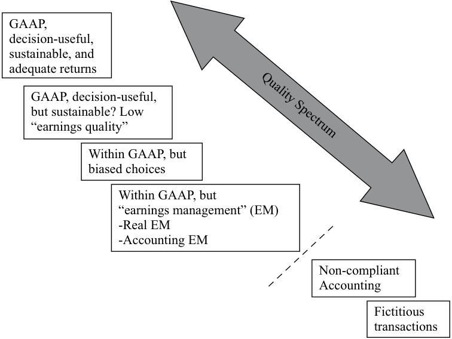

Learning Module 10 Financial Reporting Quality - Part 1: Introduction
Volume 4: Financial Statement Analysis
Learning Module 10 Financial Reporting Quality
Part 1/6: Introduction (PDF Pages 323–338)
Tập 4: Phân tích Báo cáo Tài chính (Volume 4: Financial Statement Analysis)
Học phần 10: Chất lượng Báo cáo Tài chính (Learning Module 10: Financial Reporting Quality)
Phần 1/6: Giới thiệu (Introduction) (Trang PDF 323–338)
L E A R N I N G M O D U L E
H Ọ C P H Ầ N (L E A R N I N G M O D U L E)
10
10
Financial Reporting Quality
Chất lượng Báo cáo Tài chính (Financial Reporting Quality)
by Jack T. Ciesielski, CPA, CFA, Elaine Henry, PhD, CFA, and Thomas I. Selling, PhD, CPA.
bởi Jack T. Ciesielski, CPA, CFA, Elaine Henry, PhD, CFA, và Thomas I. Selling, PhD, CPA.
Jack T. Ciesielski, CPA, CFA, is at R.G. Associates, Inc., former publisher of The Analyst’s Accounting Observer (USA). Elaine Henry, PhD, CFA, is at Stevens Institute of Technology (USA). Thomas I. Selling, PhD, CPA, is at the Cox School of Business, Southern Methodist University (USA).
Jack T. Ciesielski, CPA, CFA, làm việc tại R.G. Associates, Inc., cựu nhà xuất bản của The Analyst’s Accounting Observer (Hoa Kỳ). Elaine Henry, PhD, CFA, làm việc tại Học viện Công nghệ Stevens (Stevens Institute of Technology, Hoa Kỳ). Thomas I. Selling, PhD, CPA, làm việc tại Trường Kinh doanh Cox, Đại học Giám lý Phương Nam (Cox School of Business, Southern Methodist University, Hoa Kỳ).
LEARNING OUTCOMES
MỤC TIÊU HỌC TẬP (LEARNING OUTCOMES)
| Mastery | The candidate should be able to: |
|---|---|
| compare financial reporting quality with the quality of reported results (including quality of earnings, cash flow, and balance sheet items) |
|
| describe a spectrum for assessing financial reporting quality | |
| explain the difference between conservative and aggressive accounting i |
|
| describe motivations that might cause management to issue financial reports that are not high quality and conditions that are conducive to issuing low-quality, or even fraudulent, financial reports |
|
| describe mechanisms that discipline financial reporting quality and the potential limitations of those mechanisms |
|
| describe presentation choices, including non-GAAP measures, that could be used to influence an analyst’s opinion |
|
| describe accounting methods (choices and estimates) that could be used to manage earnings, cash flow, and balance sheet items |
|
| describe accounting warning signs and methods for detecting manipulation of information in financial reports |
| Mức độ thành thạo (Mastery) | Ứng viên cần có khả năng (The candidate should be able to): |
|---|---|
| so sánh chất lượng báo cáo tài chính (financial reporting quality) với chất lượng kết quả được báo cáo (quality of reported results – bao gồm chất lượng lợi nhuận, dòng tiền và các khoản mục trên bảng cân đối kế toán) | |
| mô tả một dải phổ (spectrum) để đánh giá chất lượng báo cáo tài chính | |
| giải thích sự khác biệt giữa kế toán thận trọng (conservative accounting) và kế toán tích cực/hiếu chiến (aggressive accounting) | |
| mô tả các động cơ (motivations) có thể khiến ban giám đốc phát hành các báo cáo tài chính không có chất lượng cao và các điều kiện tạo thuận lợi cho việc phát hành các báo cáo tài chính chất lượng thấp, hoặc thậm chí là gian lận (fraudulent) | |
| mô tả các cơ chế kỷ luật (mechanisms that discipline) đối với chất lượng báo cáo tài chính và những hạn chế tiềm tàng của các cơ chế đó | |
| mô tả các lựa chọn trình bày (presentation choices), bao gồm các thước đo phi chuẩn mực kế toán (non-GAAP measures), có thể được sử dụng để gây ảnh hưởng đến ý kiến của nhà phân tích | |
| mô tả các phương pháp kế toán (các lựa chọn và ước tính – choices and estimates) có thể được sử dụng để điều chỉnh lợi nhuận (manage earnings), dòng tiền và các khoản mục trên bảng cân đối kế toán | |
| mô tả các dấu hiệu cảnh báo kế toán (accounting warning signs) và các phương pháp phát hiện hành vi thao túng thông tin (manipulation of information) trong các báo cáo tài chính |
The two major accounting standard setters are as follows: 1) the International Accounting Standards Board (IASB) who establishes International Financial Reporting Standards (IFRS) and 2) the Financial Accounting Standards Board (FASB) who establishes US GAAP. Throughout this learning module both standards are referred to and many, but not all, of these two sets of accounting rules are identified. Note: changes in accounting standards as well as new rulings and/or pronouncements issued after the publication of this learning module may cause some of the information to become dated.
Hai tổ chức ban hành chuẩn mực kế toán lớn gồm: 1) Hội đồng Chuẩn mực Kế toán Quốc tế (International Accounting Standards Board – IASB), đơn vị thiết lập các Chuẩn mực Báo cáo Tài chính Quốc tế (International Financial Reporting Standards – IFRS) và 2) Hội đồng Chuẩn mực Kế toán Tài chính (Financial Accounting Standards Board – FASB), đơn vị thiết lập các Nguyên tắc Kế toán được Chấp nhận Chung của Hoa Kỳ (US GAAP). Xuyên suốt học phần này, cả hai bộ chuẩn mực đều được đề cập và nhiều, dù không phải tất cả, các quy tắc kế toán thuộc hai bộ chuẩn mực này được xác định. Lưu ý: những thay đổi trong chuẩn mực kế toán cũng như các phán quyết và/hoặc công bố mới được ban hành sau khi xuất bản học phần này có thể khiến một số thông tin trở nên lỗi thời.
1
1
INTRODUCTION
GIỚI THIỆU (INTRODUCTION)
Financial reporting quality varies across companies. The ability to assess the quality of a company’s financial reporting is an important skill for analysts. Indications of low-quality financial reporting can prompt an analyst to maintain heightened skepticism when reading a company’s reports, to review disclosures critically when undertaking financial statement analysis, and to incorporate appropriate adjustments in assessments of past performance and forecasts of future performance.
Chất lượng báo cáo tài chính (financial reporting quality) khác nhau giữa các công ty. Khả năng đánh giá chất lượng báo cáo tài chính của một công ty là một kỹ năng quan trọng đối với các nhà phân tích. Các dấu hiệu của báo cáo tài chính chất lượng thấp có thể thúc đẩy nhà phân tích duy trì sự hoài nghi cao độ khi đọc các báo cáo của công ty, xem xét kỹ lưỡng các thuyết minh khi thực hiện phân tích báo cáo tài chính, và kết hợp các điều chỉnh phù hợp trong việc đánh giá kết quả hoạt động trong quá khứ cũng như dự báo kết quả hoạt động trong tương lai.
LEARNING MODULE OVERVIEW
TỔNG QUAN HỌC PHẦN (LEARNING MODULE OVERVIEW)
-
Financial reporting quality can be thought of as spanning a continuum. Reporting of the highest quality contains information that is relevant, correct, complete, and unbiased, whereas the lowest quality reporting contains information that is not just biased or incomplete but possibly pure fabrication.
-
Reporting quality, the focus of this module, pertains to the quality of the information disclosed. High-quality reporting represents the economic reality of the company’s activities during the reporting period and the company’s financial condition at the end of the period.
-
Results quality (commonly referred to as earnings quality) pertains to the earnings and cash generated by the company’s actual economic activities and the resulting financial condition, relative to expectations of current and future financial performance. Quality earnings can be regarded as more sustainable, providing a sound platform for forecasts.
-
An aspect of financial reporting quality is the degree to which accounting choices are conservative or aggressive. “Aggressive” typically refers to choices that aim to enhance the company’s reported performance and financial position by inflating the amount of revenues, earnings, and/or operating cash flow reported in the period; or by decreasing expenses for the period and/or the amount of debt reported on the balance sheet.
-
Conservatism in financial reports can result from either (1) accounting standards that specifically require a conservative treatment of a transaction or an event or (2) judgments made by managers when applying accounting standards that result in conservative results.
-
Managers may be motivated to issue less-than-high-quality financial reports to mask poor performance, boost the company’s stock price, to increase personal compensation, and/or to avoid violation of debt covenants.
-
Conditions that are conducive to the issuance of low-quality financial reports include a cultural environment that result in fewer or less transparent financial disclosures, book/tax conformity that shifts emphasis toward legal compliance and away from fair presentation, and limited capital markets regulation.
-
Mechanisms that discipline financial reporting quality include open capital markets and incentives for companies to minimize cost of capital, independent auditors, contract provisions specifically tailored to penalize misreporting, and enforcement by regulatory entities.
-
Chất lượng báo cáo tài chính có thể được hình dung như trải dài trên một dải liên tục (continuum). Báo cáo có chất lượng cao nhất chứa đựng thông tin thích hợp (relevant), chính xác (correct), đầy đủ (complete), và không thiên lệch (unbiased), trong khi báo cáo có chất lượng thấp nhất chứa đựng thông tin không chỉ thiên lệch hoặc không đầy đủ mà còn có thể là hoàn toàn bịa đặt (pure fabrication).
-
Chất lượng báo cáo (reporting quality), trọng tâm của học phần này, đề cập đến chất lượng của thông tin được công bố. Báo cáo chất lượng cao phản ánh thực tế kinh tế (economic reality) của các hoạt động của công ty trong kỳ báo cáo và tình hình tài chính của công ty vào cuối kỳ.
-
Chất lượng kết quả (results quality – thường được gọi là chất lượng lợi nhuận hay earnings quality) đề cập đến lợi nhuận và tiền mặt được tạo ra từ các hoạt động kinh tế thực tế của công ty và tình hình tài chính dẫn đến từ đó, so với kỳ vọng về kết quả hoạt động tài chính hiện tại và tương lai. Lợi nhuận có chất lượng có thể được coi là bền vững hơn (more sustainable), cung cấp một nền tảng vững chắc cho các dự báo.
-
Một khía cạnh của chất lượng báo cáo tài chính là mức độ mà các lựa chọn kế toán mang tính thận trọng (conservative) hay tích cực/hiếu chiến (aggressive). “Tích cực/hiếu chiến” (aggressive) thường đề cập đến các lựa chọn nhằm mục đích nâng cao kết quả hoạt động và vị thế tài chính được báo cáo của công ty bằng cách thổi phồng mức doanh thu, lợi nhuận, và/hoặc dòng tiền từ hoạt động kinh doanh được báo cáo trong kỳ; hoặc bằng cách làm giảm chi phí trong kỳ và/hoặc mức nợ được báo cáo trên bảng cân đối kế toán.
-
Sự thận trọng (conservatism) trong các báo cáo tài chính có thể xuất phát từ (1) các chuẩn mực kế toán yêu cầu cụ thể việc xử lý thận trọng đối với một giao dịch hoặc sự kiện hoặc (2) các xét đoán của các nhà quản lý khi áp dụng các chuẩn mực kế toán dẫn đến kết quả thận trọng.
-
Các nhà quản lý có thể có động cơ phát hành các báo cáo tài chính kém chất lượng để che giấu kết quả hoạt động yếu kém, thúc đẩy giá cổ phiếu của công ty, làm tăng thù lao cá nhân, và/hoặc tránh vi phạm các giao ước nợ (debt covenants).
-
Các điều kiện tạo thuận lợi cho việc phát hành các báo cáo tài chính chất lượng thấp bao gồm một môi trường văn hóa dẫn đến việc công bố thông tin tài chính ít hơn hoặc kém minh bạch hơn, sự đồng nhất giữa kế toán và thuế (book/tax conformity) làm dịch chuyển trọng tâm sang tuân thủ pháp lý thay vì trình bày hợp lý (fair presentation), và quy định quản lý thị trường vốn còn hạn chế.
-
Các cơ chế kỷ luật chất lượng báo cáo tài chính bao gồm thị trường vốn mở và các động lực để các công ty tối thiểu hóa chi phí vốn (cost of capital), các kiểm toán viên độc lập (independent auditors), các điều khoản hợp đồng được thiết kế riêng để trừng phạt hành vi báo cáo sai lệch, và sự thực thi của các cơ quan quản lý.
-
Pro forma earnings (also commonly referred to as non-GAAP or non-IFRS earnings) adjust earnings as reported on the income statement. Pro forma earnings that exclude negative items are a hallmark of aggressive presentation choices.
-
■ Companies are required to make additional disclosures when presenting any non-GAAP or non-IFRS metric.
-
■ Managers’ considerable flexibility in choosing their companies’ accounting policies and in formulating estimates provides opportunities for aggressive accounting.
-
■ Examples of accounting choices that affect earnings and balance sheets include inventory cost flow assumptions, estimates of uncollectible accounts receivable, estimated realizability of deferred tax assets, depreciation method, estimated salvage value of depreciable assets, and estimated useful life of depreciable assets.
-
■ Cash flow from operations is an important metric for investors that can be enhanced by management’s operating choices, such as stretching accounts payable, and potentially by classification choices.
-
Lợi nhuận chiếu lệ (pro forma earnings – cũng thường được gọi là lợi nhuận phi GAAP hoặc phi IFRS) điều chỉnh lợi nhuận được báo cáo trên báo cáo kết quả hoạt động kinh doanh. Lợi nhuận chiếu lệ loại trừ các khoản mục tiêu cực là một dấu hiệu đặc trưng của các lựa chọn trình bày tích cực/hiếu chiến (aggressive presentation choices).
-
■ Các công ty được yêu cầu phải thực hiện các thuyết minh bổ sung khi trình bày bất kỳ thước đo phi GAAP (non-GAAP) hoặc phi IFRS (non-IFRS) nào.
-
■ Sự linh hoạt đáng kể của các nhà quản lý trong việc lựa chọn các chính sách kế toán của công ty họ và trong việc xây dựng các ước tính tạo ra cơ hội cho kế toán tích cực/hiếu chiến (aggressive accounting).
-
■ Ví dụ về các lựa chọn kế toán ảnh hưởng đến lợi nhuận và bảng cân đối kế toán bao gồm các giả định về dòng chi phí hàng tồn kho (inventory cost flow assumptions), ước tính các khoản phải thu khó đòi (uncollectible accounts receivable), khả năng thu hồi ước tính của tài sản thuế thu nhập hoãn lại (deferred tax assets), phương pháp khấu hao (depreciation method), giá trị thanh lý ước tính của tài sản khấu hao (estimated salvage value), và thời gian sử dụng hữu ích ước tính của tài sản khấu hao (estimated useful life).
-
■ Dòng tiền từ hoạt động kinh doanh (cash flow from operations – CFO) là một thước đo quan trọng đối với các nhà đầu tư, có thể được cải thiện thông qua các lựa chọn hoạt động của ban giám đốc, chẳng hạn như kéo dài các khoản phải trả người bán (stretching accounts payable), và có khả năng thông qua các lựa chọn phân loại (classification choices).
CONCEPTUAL OVERVIEW
TỔNG QUAN KHÁI NIỆM (CONCEPTUAL OVERVIEW)
2
2
compare financial reporting quality with the quality of reported results (including quality of earnings, cash flow, and balance sheet items)
so sánh chất lượng báo cáo tài chính với chất lượng kết quả được báo cáo (bao gồm chất lượng lợi nhuận, dòng tiền và các khoản mục trên bảng cân đối kế toán)
Ideally, analysts would always have access to financial reports that are based on sound financial reporting standards, such as those from the International Accounting Standards Board (IASB) and the Financial Accounting Standards Board (FASB), and that are free from manipulation. But, in practice, the quality of financial reports can vary greatly. High-quality financial reporting provides information that is useful to analysts in assessing a company’s performance and prospects. Low-quality financial reporting contains inaccurate, misleading, or incomplete information.
Lý tưởng nhất là các nhà phân tích luôn có quyền tiếp cận với các báo cáo tài chính dựa trên các chuẩn mực báo cáo tài chính vững chắc, chẳng hạn như các chuẩn mực từ Hội đồng Chuẩn mực Kế toán Quốc tế (IASB) và Hội đồng Chuẩn mực Kế toán Tài chính (FASB), và không bị thao túng. Nhưng trên thực tế, chất lượng của các báo cáo tài chính có thể rất khác nhau. Báo cáo tài chính chất lượng cao cung cấp thông tin hữu ích cho các nhà phân tích trong việc đánh giá kết quả hoạt động và triển vọng của một công ty. Báo cáo tài chính chất lượng thấp chứa đựng thông tin không chính xác, gây hiểu lầm hoặc không đầy đủ.
Extreme lapses in financial reporting quality have given rise to high-profile scandals that resulted not only in investor losses but also in reduced confidence in the financial system. Financial statement users who were able to accurately assess financial reporting quality were better positioned to avoid losses. These lapses illustrate the challenges analysts face as well as the potential costs of failing to recognize practices that result in misleading or inaccurate financial reports.1 Examples of misreporting can provide an analyst with insight into various signals that may indicate poor-quality financial reports.
Những sai sót cực đoan về chất lượng báo cáo tài chính đã làm nảy sinh các vụ bê bối chấn động, dẫn đến không chỉ thua lỗ cho nhà đầu tư mà còn làm suy giảm niềm tin vào hệ thống tài chính. Những người sử dụng báo cáo tài chính có khả năng đánh giá chính xác chất lượng báo cáo tài chính đã có vị thế tốt hơn để tránh thua lỗ. Những sai sót này minh họa cho những thách thức mà các nhà phân tích phải đối mặt cũng như những chi phí tiềm tàng của việc không nhận ra các thông lệ dẫn đến báo cáo tài chính gây hiểu lầm hoặc không chính xác.1 Các ví dụ về báo cáo sai lệch có thể cung cấp cho nhà phân tích cái nhìn sâu sắc về các tín hiệu khác nhau có thể chỉ ra các báo cáo tài chính kém chất lượng.
This module addresses financial reporting quality , which pertains to the quality of information in financial reports, including disclosures in notes. High-quality reporting provides decision-useful information, which is relevant and faithfully represents the economic reality of the company’s activities during the reporting period as well as the company’s financial condition at the end of the period. A separate but interrelated
Học phần này giải quyết chất lượng báo cáo tài chính (financial reporting quality), đề cập đến chất lượng của thông tin trong các báo cáo tài chính, bao gồm cả các thuyết minh trong phần ghi chú (notes). Báo cáo chất lượng cao cung cấp thông tin hữu ích cho việc ra quyết định (decision-useful information), vừa thích hợp (relevant) vừa trình bày trung thực (faithfully represents) thực tế kinh tế của các hoạt động của công ty trong kỳ báo cáo cũng như tình hình tài chính của công ty vào cuối kỳ. Một thuộc tính chất lượng riêng biệt nhưng có mối liên hệ chặt chẽ với nhau
1 In this module, the examples of misleading or inaccurate financial reports occurred in prior years— not because there are no current examples of questionable financial reporting, but rather because it has been conclusively resolved that misreporting occurred in the historical examples.
1 Trong học phần này, các ví dụ về báo cáo tài chính gây hiểu lầm hoặc không chính xác đã xảy ra trong những năm trước— không phải vì hiện tại không có các ví dụ về báo cáo tài chính đáng ngờ, mà bởi vì trong các ví dụ lịch sử đó, việc báo cáo sai lệch đã được kết luận một cách dứt khoát.
attribute of quality is quality of reported results or earnings quality , which pertains to the earnings and cash generated by the company’s actual economic activities and the resulting financial condition. The term “earnings quality” is commonly used in practice and will be used broadly to encompass the quality of earnings, cash flow, or balance sheet items. High-quality earnings result from activities that a company likely will be able to sustain in the future and provide a sufficient return on the company’s investment. The concepts of earnings quality and financial reporting quality are interrelated because a correct assessment of earnings quality is possible only when there is some basic level of financial reporting quality. Beyond this basic level, as the quality of reporting increases, the ability of financial statement users to correctly assess earnings quality and to develop expectations for future performance also increases.
là chất lượng của kết quả được báo cáo (quality of reported results) hay chất lượng lợi nhuận (earnings quality), đề cập đến lợi nhuận và tiền mặt được tạo ra từ các hoạt động kinh tế thực tế của công ty và tình hình tài chính dẫn đến từ đó. Thuật ngữ “chất lượng lợi nhuận” (earnings quality) được sử dụng phổ biến trong thực tiễn và sẽ được sử dụng theo nghĩa rộng để bao hàm chất lượng của lợi nhuận, dòng tiền, hoặc các khoản mục trên bảng cân đối kế toán. Lợi nhuận chất lượng cao xuất phát từ các hoạt động mà một công ty có nhiều khả năng sẽ duy trì được trong tương lai và mang lại tỷ suất sinh lợi thỏa đáng trên khoản đầu tư của công ty. Các khái niệm về chất lượng lợi nhuận và chất lượng báo cáo tài chính có mối liên hệ chặt chẽ với nhau vì việc đánh giá chính xác chất lượng lợi nhuận chỉ có thể thực hiện được khi có một mức độ chất lượng báo cáo tài chính cơ bản nào đó. Vượt qua mức cơ bản này, khi chất lượng báo cáo tăng lên, khả năng của người sử dụng báo cáo tài chính trong việc đánh giá chính xác chất lượng lợi nhuận và xây dựng kỳ vọng về kết quả hoạt động trong tương lai cũng tăng lên.
After providing a conceptual overview of reporting quality, this module discusses motivations that might cause, and conditions that might enable, management to issue financial reports that are not high quality and mechanisms that aim to provide discipline to financial reporting quality. We also describe choices made by management that can affect financial reporting quality—presentation choices, accounting methods, and estimates—as well as warning signs of poor-quality financial reporting.
Sau khi cung cấp một cái nhìn tổng quan về mặt khái niệm đối với chất lượng báo cáo, học phần này thảo luận về các động cơ có thể gây ra, và các điều kiện có thể cho phép, ban giám đốc phát hành các báo cáo tài chính không có chất lượng cao cùng các cơ chế nhằm tạo ra kỷ luật đối với chất lượng báo cáo tài chính. Chúng tôi cũng mô tả các lựa chọn của ban giám đốc có thể ảnh hưởng đến chất lượng báo cáo tài chính—các lựa chọn trình bày, phương pháp kế toán, và các ước tính—cũng như các dấu hiệu cảnh báo về báo cáo tài chính kém chất lượng.
Conceptual Overview
Tổng quan Khái niệm (Conceptual Overview)
Financial reporting quality and results or earnings quality are interrelated attributes of quality. Exhibit 1 illustrates this interrelationship and its implications.
Chất lượng báo cáo tài chính và chất lượng kết quả hay chất lượng lợi nhuận là các thuộc tính chất lượng có mối liên hệ chặt chẽ với nhau. Bảng minh họa 1 (Exhibit 1) minh họa mối liên hệ qua lại này và các hàm ý của nó.
Exhibit 1: Relationships between Financial Reporting Quality and Earnings Quality
Bảng minh họa 1: Mối quan hệ giữa Chất lượng Báo cáo Tài chính và Chất lượng Lợi nhuận (Exhibit 1: Relationships between Financial Reporting Quality and Earnings Quality)
| Financial Repo | rting Quality | ||
|---|---|---|---|
| Low | High | ||
| Earnings Rl |
High | LOW financial reporting quality impedes assessment of |
HIGH financialreporting quality enables assessment. HIGHearningsquality increases companyvalue. |
| (esuts) Quality |
Low | earnings quality and impedes valuation. |
HIGH financialreporting quality enables assessment. LOWearningsquality decreases company value. |
| Chất lượng Báo cáo Tài chính (Financial Reporting Quality) | |||
|---|---|---|---|
| Thấp (Low) | Cao (High) | ||
| Chất lượng Lợi nhuận (Kết quả) [Earnings (Results) Quality] |
Cao (High) | Chất lượng báo cáo tài chính THẤP cản trở việc đánh giá chất lượng lợi nhuận và cản trở việc định giá. | Chất lượng báo cáo tài chính CAO cho phép đánh giá. Chất lượng lợi nhuận CAO làm tăng giá trị công ty. |
| Thấp (Low) | Chất lượng báo cáo tài chính THẤP cản trở việc đánh giá chất lượng lợi nhuận và cản trở việc định giá. | Chất lượng báo cáo tài chính CAO cho phép đánh giá. Chất lượng lợi nhuận THẤP làm giảm giá trị công ty. |
As shown in Exhibit 1, if financial reporting quality is low, the information provided is of little use in assessing the company’s performance, and thus in making investment and other decisions.
Như được thể hiện trong Bảng minh họa 1, nếu chất lượng báo cáo tài chính thấp, thông tin được cung cấp sẽ có rất ít giá trị sử dụng trong việc đánh giá kết quả hoạt động của công ty, và do đó ít hữu ích trong việc đưa ra các quyết định đầu tư và các quyết định khác.
Financial reporting quality varies across companies. High-quality reports contain information that is relevant, complete, neutral, and free from error. The lowest-quality reports contain information that is pure fabrication. Earnings (results) quality can range from high and sustainable to low and unsustainable. Providers of resources prefer high and sustainable earnings. Combining the two measures of quality—financial reporting and earnings—the overall quality of financial reports from a user perspective can be thought of as spanning a continuum from the highest to the lowest. Exhibit 2 presents a quality spectrum that provides a basis for evaluating better versus poorer quality reports. This spectrum ranges from reports that are of high financial reporting quality and reflect high and sustainable earnings quality to reports that are not useful because of poor financial reporting quality.
Chất lượng báo cáo tài chính khác nhau giữa các công ty. Các báo cáo chất lượng cao chứa đựng thông tin thích hợp (relevant), đầy đủ (complete), trung lập (neutral), và không có sai sót (free from error). Các báo cáo chất lượng thấp nhất chứa đựng thông tin hoàn toàn bịa đặt (pure fabrication). Chất lượng lợi nhuận (kết quả) có thể dao động từ mức cao và bền vững đến mức thấp và không bền vững. Những người cung cấp nguồn lực ưa thích lợi nhuận cao và bền vững. Kết hợp hai thước đo chất lượng—báo cáo tài chính và lợi nhuận—chất lượng tổng thể của các báo cáo tài chính từ góc độ người sử dụng có thể được hình dung như trải dài trên một dải liên tục từ cao nhất đến thấp nhất. Bảng minh họa 2 (Exhibit 2) trình bày một dải phổ chất lượng (quality spectrum) cung cấp cơ sở để đánh giá các báo cáo có chất lượng tốt hơn so với kém hơn. Dải phổ này trải dài từ các báo cáo có chất lượng báo cáo tài chính cao và phản ánh chất lượng lợi nhuận cao, bền vững cho đến các báo cáo không hữu ích do chất lượng báo cáo tài chính kém.
Exhibit 2: Quality Spectrum of Financial Reports
Bảng minh họa 2: Dải phổ Chất lượng của các Báo cáo Tài chính (Exhibit 2: Quality Spectrum of Financial Reports)

Chú thích hình ảnh (Dải phổ chất lượng - Quality Spectrum từ cao xuống thấp): 1. Tuân thủ GAAP, hữu ích cho việc ra quyết định, bền vững và tỷ suất sinh lợi thỏa đáng (GAAP, decision-useful, sustainable, and adequate returns) 2. Tuân thủ GAAP, hữu ích cho việc ra quyết định, nhưng có bền vững không? “Chất lượng lợi nhuận” thấp (GAAP, decision-useful, but sustainable? Low “earnings quality”) 3. Trong phạm vi GAAP, nhưng có các lựa chọn thiên lệch (Within GAAP, but biased choices) 4. Trong phạm vi GAAP, nhưng có “điều chỉnh/quản trị lợi nhuận” (Within GAAP, but “earnings management” (EM)): - Điều chỉnh lợi nhuận thực (Real EM) - Điều chỉnh lợi nhuận kế toán (Accounting EM) 5. Kế toán không tuân thủ chuẩn mực (Non-compliant Accounting) 6. Các giao dịch giả mạo/hư cấu (Fictitious transactions)
GAAP, DECISION USEFUL FINANCIAL REPORTING
BÁO CÁO TÀI CHÍNH TUÂN THỦ GAAP, HỮU ÍCH CHO VIỆC RA QUYẾT ĐỊNH (GAAP, DECISION USEFUL FINANCIAL REPORTING)
3
3
describe a spectrum for assessing financial reporting quality
mô tả một dải phổ để đánh giá chất lượng báo cáo tài chính
At the top of the spectrum, labeled in Exhibit 2 as “GAAP, decision-useful, sustainable, and adequate returns,” are high-quality reports that provide useful information about high-quality earnings.
Ở phía trên cùng của dải phổ, được gắn nhãn trong Bảng minh họa 2 là “Tuân thủ GAAP, hữu ích cho việc ra quyết định, bền vững và tỷ suất sinh lợi thỏa đáng” (GAAP, decision-useful, sustainable, and adequate returns), là các báo cáo chất lượng cao cung cấp thông tin hữu ích về lợi nhuận chất lượng cao.
-
High-quality financial reports conform to the generally accepted accounting principles (GAAP) of the jurisdiction, such as International Financial Reporting Standards (IFRS), US GAAP, or other home-country GAAP. The exhibit uses the term GAAP to refer generically to the accounting standards accepted in a company’s jurisdiction.
-
In addition to conforming to GAAP, high-quality financial reports also embody the characteristics of decision-useful information, such as those defined in the Conceptual Framework .2 Recall that the fundamental characteristics of useful information are relevance and faithful representation. Relevant information is defined as information that can affect a decision and encompasses the notion of materiality. (Information is considered material if
-
Các báo cáo tài chính chất lượng cao tuân thủ các nguyên tắc kế toán được chấp nhận chung (generally accepted accounting principles – GAAP) của khu vực pháp lý, chẳng hạn như Chuẩn mực Báo cáo Tài chính Quốc tế (IFRS), US GAAP, hoặc GAAP của quốc gia sở tại khác. Bảng minh họa sử dụng thuật ngữ GAAP để chỉ chung các chuẩn mực kế toán được chấp nhận tại khu vực pháp lý của một công ty.
-
Ngoài việc tuân thủ GAAP, các báo cáo tài chính chất lượng cao còn mang các đặc điểm của thông tin hữu ích cho việc ra quyết định, chẳng hạn như những đặc điểm được định nghĩa trong Khuôn khổ Khái niệm (Conceptual Framework).2 Hãy nhớ lại rằng các đặc điểm nền tảng (fundamental characteristics) của thông tin hữu ích là tính thích hợp (relevance) và sự trình bày trung thực (faithful representation). Thông tin thích hợp được định nghĩa là thông tin có thể ảnh hưởng đến một quyết định và bao hàm khái niệm trọng yếu (materiality). (Thông tin được coi là trọng yếu nếu
2 The characteristics of decision-useful information are identical under IFRS and US GAAP. In September 2010, the IASB adopted the Conceptual Framework for Financial Reporting in place of the Framework for the Preparation and Presentation of Financial Statements (1989). The Conceptual Framework represents the partial completion of a joint convergence project between the IASB and FASB on an updated framework. The Conceptual Framework (2010) contains two updated chapters: “The Objective of Financial Reporting” and “Qualitative Characteristics of Useful Financial Information.” The remainder of the material in the Conceptual Framework is from the Framework (1989) and will be updated as the project is completed. Also in September 2010, the FASB issued Concepts Statement 8, “Conceptual Framework for Financial Reporting,” to replace Concepts Statements 1 and 2.
2 Các đặc điểm của thông tin hữu ích cho việc ra quyết định là giống hệt nhau theo IFRS và US GAAP. Vào tháng 9 năm 2010, IASB đã thông qua Khuôn khổ Khái niệm cho Báo cáo Tài chính (Conceptual Framework for Financial Reporting) thay thế cho Khuôn khổ cho việc Lập và Trình bày Báo cáo Tài chính (Framework for the Preparation and Presentation of Financial Statements) (1989). Khuôn khổ Khái niệm thể hiện sự hoàn thành một phần của dự án hội tụ chung giữa IASB và FASB về một khuôn khổ cập nhật. Khuôn khổ Khái niệm (2010) bao gồm hai chương được cập nhật: “Mục tiêu của Báo cáo Tài chính” (The Objective of Financial Reporting) và “Các Đặc điểm Định tính của Thông tin Tài chính Hữu ích” (Qualitative Characteristics of Useful Financial Information). Phần tài liệu còn lại trong Khuôn khổ Khái niệm được lấy từ Khuôn khổ (1989) và sẽ được cập nhật khi dự án hoàn tất. Cũng vào tháng 9 năm 2010, FASB đã ban hành Tuyên bố Khái niệm số 8 (Concepts Statement 8), “Khuôn khổ Khái niệm cho Báo cáo Tài chính,” để thay thế Tuyên bố Khái niệm số 1 và số 2.
“omitting it or misstating it could influence decisions that users make on the basis of the financial information of a specific reporting entity.”3 ) Faithful representation of economic events is complete, neutral, and free from error.
“việc bỏ sót hoặc trình bày sai lệch thông tin đó có thể ảnh hưởng đến các quyết định mà người sử dụng đưa ra trên cơ sở thông tin tài chính của một đơn vị báo cáo cụ thể.”3) Sự trình bày trung thực các sự kiện kinh tế là phải đầy đủ (complete), trung lập (neutral), và không có sai sót (free from error).
The Conceptual Framework also enumerates enhancing characteristics of useful information: comparability, verifiability, timeliness, and understandability. Of course, the desirable characteristics for financial information require trade-offs. For example, financial reports must balance the aim of providing information that is produced quickly enough to be timely and thus relevant, and yet not so quickly that errors occur. Financial reports must balance the aim of providing information that is complete but not so exhaustive that immaterial information is included. High-quality information results when these and other trade-offs are made in an unbiased, skillful manner.
Khuôn khổ Khái niệm cũng liệt kê các đặc điểm bổ trợ (enhancing characteristics) của thông tin hữu ích: khả năng so sánh (comparability), khả năng kiểm chứng (verifiability), tính kịp thời (timeliness), và khả năng hiểu được (understandability). Tất nhiên, các đặc điểm mong muốn đối với thông tin tài chính đòi hỏi sự đánh đổi (trade-offs). Ví dụ, các báo cáo tài chính phải cân bằng giữa mục tiêu cung cấp thông tin được tạo ra đủ nhanh để kịp thời và do đó thích hợp, nhưng không quá nhanh đến mức xảy ra sai sót. Các báo cáo tài chính phải cân bằng giữa mục tiêu cung cấp thông tin đầy đủ nhưng không quá chi tiết đến mức bao gồm cả những thông tin không trọng yếu. Thông tin chất lượng cao có được khi những sự đánh đổi này và các sự đánh đổi khác được thực hiện một cách khéo léo, không thiên lệch.
- High-quality earnings indicate an adequate level of return on investment and derive from activities that a company likely will be able to sustain in the future. An adequate level of return on investment exceeds the cost of the investment and also equals or exceeds the expected return. Sustainable activities and sustainable earnings are those expected to recur in the future. Sustainable earnings that provide a high return on investment contribute to higher valuation of a company and its securities.
- Lợi nhuận chất lượng cao chỉ ra một mức tỷ suất sinh lợi trên vốn đầu tư (return on investment) thỏa đáng và bắt nguồn từ các hoạt động mà một công ty có nhiều khả năng sẽ duy trì được trong tương lai. Một mức tỷ suất sinh lợi trên vốn đầu tư thỏa đáng phải vượt quá chi phí của khoản đầu tư và đồng thời bằng hoặc vượt quá tỷ suất sinh lợi kỳ vọng. Các hoạt động bền vững và lợi nhuận bền vững là những hoạt động và lợi nhuận dự kiến sẽ lặp lại trong tương lai. Lợi nhuận bền vững mang lại tỷ suất sinh lợi trên vốn đầu tư cao góp phần làm tăng định giá của một công ty và các chứng khoán của công ty đó.
GAAP, Decision-Useful, but Sustainable?
Tuân thủ GAAP, Hữu ích cho việc Ra quyết định, nhưng Có bền vững không? (GAAP, Decision-Useful, but Sustainable?)
The next level down in Exhibit 2, “GAAP, decision-useful, but sustainable?” refers to circumstances in which high-quality reporting provides useful information, but that information reflects results or earnings that are not sustainable (lower earnings quality). The earnings may not be sustainable because the company cannot expect earnings that generate the same level of return on investment in the future or because the earnings, although replicable, will not generate sufficient return on investment to sustain the company. Earnings quality is low in both cases. Reporting can be high quality even when the economic reality being depicted is not of high quality. For example, consider a company that generates a loss, or earnings that do not provide an adequate return on investment, or earnings that resulted from non-recurring activities. The relatively undesirable economic reality could nonetheless be depicted in financial reporting that provides high-quality, decision-useful information.
Mức độ tiếp theo bên dưới trong Bảng minh họa 2, “Tuân thủ GAAP, hữu ích cho việc ra quyết định, nhưng có bền vững không?” (GAAP, decision-useful, but sustainable?) đề cập đến các trường hợp trong đó báo cáo chất lượng cao cung cấp thông tin hữu ích, nhưng thông tin đó phản ánh kết quả hoặc lợi nhuận không bền vững (chất lượng lợi nhuận thấp hơn). Lợi nhuận có thể không bền vững bởi vì công ty không thể kỳ vọng lợi nhuận tạo ra cùng một mức tỷ suất sinh lợi trên vốn đầu tư trong tương lai hoặc bởi vì lợi nhuận, mặc dù có thể lặp lại, sẽ không tạo ra đủ tỷ suất sinh lợi trên vốn đầu tư để duy trì công ty. Chất lượng lợi nhuận đều thấp trong cả hai trường hợp. Báo cáo vẫn có thể có chất lượng cao ngay cả khi thực tế kinh tế đang được mô tả không có chất lượng cao. Ví dụ, hãy xem xét một công ty tạo ra một khoản lỗ, hoặc lợi nhuận không mang lại tỷ suất sinh lợi thỏa đáng trên vốn đầu tư, hoặc lợi nhuận bắt nguồn từ các hoạt động không thường xuyên (non-recurring activities). Thực tế kinh tế tương đối không mong muốn đó tuy nhiên vẫn có thể được mô tả trong báo cáo tài chính cung cấp thông tin chất lượng cao, hữu ích cho việc ra quyết định.
Exhibit 3 presents an excerpt from the fiscal year 2014 first-quarter results of Toyota Motor Corporation, a Japanese automobile company. As highlighted by a Wall Street Journal article,4 the company sold fewer cars but reported an 88 percent increase in operating profits compared with the prior year, primarily because of the change in exchange rates. The weaker yen benefited Toyota both because the company manufactures more cars in Japan (compared with its competitors) and because the company sells a significant number of cars outside of Japan. Exchange rate weakening is a less sustainable source of profits than manufacturing and selling cars. In summary, this example is a case of high-quality financial reporting coupled with lower earnings quality.
Bảng minh họa 3 (Exhibit 3) trình bày một đoạn trích từ kết quả quý đầu tiên của năm tài chính 2014 của Tập đoàn Ô tô Toyota (Toyota Motor Corporation), một công ty ô tô Nhật Bản. Như được nhấn mạnh bởi một bài báo trên tờ Wall Street Journal,4 công ty đã bán được ít xe hơn nhưng lại báo cáo mức tăng 88% trong lợi nhuận hoạt động (operating profits) so với năm trước, chủ yếu là do sự thay đổi của tỷ giá hối đoái. Đồng yên yếu hơn đã mang lại lợi ích cho Toyota cả vì công ty sản xuất nhiều xe hơi hơn tại Nhật Bản (so với các đối thủ cạnh tranh) và vì công ty bán một số lượng đáng kể xe hơi bên ngoài Nhật Bản. Sự suy yếu của tỷ giá hối đoái là một nguồn lợi nhuận kém bền vững hơn so với việc sản xuất và bán xe hơi. Tóm lại, ví dụ này là một trường hợp báo cáo tài chính chất lượng cao đi kèm với chất lượng lợi nhuận thấp hơn.
Exhibit 3: Excerpt from Toyota Motor Corporation’s Consolidated Financial Results for FY2014 First Quarter Ending 30 June 2013
Bảng minh họa 3: Đoạn trích từ Kết quả Tài chính Hợp nhất của Tập đoàn Ô tô Toyota cho Quý 1 Năm tài chính 2014 Kết thúc vào ngày 30 tháng 6 năm 2013 (Exhibit 3: Excerpt from Toyota Motor Corporation’s Consolidated Financial Results for FY2014 First Quarter Ending 30 June 2013)
Consolidated vehicle unit sales in Japan and overseas decreased by 37 thousand units, or 1.6%, to 2,232 thousand units in FY2014 first quarter (the three months ended June 30, 2013) compared with FY2013 first quarter (the three months ended June 30, 2012). Vehicle unit sales in Japan decreased by 51 thousand units,
Doanh số bán xe hợp nhất tính theo chiếc tại Nhật Bản và ở nước ngoài đã giảm 37 nghìn chiếc, tương đương 1,6%, xuống còn 2.232 nghìn chiếc trong quý 1 năm tài chính 2014 (ba tháng kết thúc vào ngày 30 tháng 6 năm 2013) so với quý 1 năm tài chính 2013 (ba tháng kết thúc vào ngày 30 tháng 6 năm 2012). Doanh số bán xe tính theo chiếc tại Nhật Bản giảm 51 nghìn chiếc,
3 Text from conceptual frameworks referenced in Note 4.
3 Văn bản từ các khuôn khổ khái niệm được tham chiếu trong Chú thích 4 (Note 2).
4 Back Aaron 2013. “Toyota, What a Difference the Yen Makes.” Wall Street Journal (4 August 2013).
4 Back Aaron 2013. “Toyota, What a Difference the Yen Makes.” Wall Street Journal (4 tháng 8 năm 2013).
or 8.8%, to 526 thousand units in FY2014 first quarter compared with FY2013 first quarter. Meanwhile, overseas vehicle unit sales increased by 14 thousand units, or 0.8%, to 1,706 thousand units in FY2014 first quarter compared with FY2013 first quarter.
tương đương 8,8%, xuống còn 526 nghìn chiếc trong quý 1 năm tài chính 2014 so với quý 1 năm tài chính 2013. Trong khi đó, doanh số bán xe tính theo chiếc ở nước ngoài tăng 14 nghìn chiếc, tương đương 0,8%, lên 1.706 nghìn chiếc trong quý 1 năm tài chính 2014 so với quý 1 năm tài chính 2013.
As for the results of operations, net revenues increased by 753.7 billion yen, or 13.7%, to 6,255.3 billion yen in FY2014 first quarter compared with FY2013 first quarter, and operating income increased by 310.2 billion yen, or 87.9%, to 663.3 billion yen in FY2014 first quarter compared with FY2013 first quarter. The factors contributing to an increase in operating income were the effects of changes in exchange rates of 260.0 billion yen, cost reduction efforts of 70.0 billion yen, marketing efforts of 30.0 billion yen and other factors of 10.2 billion yen. On the other hand, the factors contributing to a decrease in operating income were the increase in expenses and others of 60.0 billion yen. Source: Back Aaron 2013. “Toyota, What a Difference the Yen Makes.” Wall Street Journal (4 August 2013).
Về kết quả hoạt động kinh doanh, doanh thu thuần (net revenues) tăng 753,7 tỷ yên, tương đương 13,7%, lên 6.255,3 tỷ yên trong quý 1 năm tài chính 2014 so với quý 1 năm tài chính 2013, và thu nhập hoạt động (operating income) tăng 310,2 tỷ yên, tương đương 87,9%, lên 663,3 tỷ yên trong quý 1 năm tài chính 2014 so với quý 1 năm tài chính 2013. Các yếu tố đóng góp vào sự gia tăng thu nhập hoạt động là tác động của những thay đổi về tỷ giá hối đoái ở mức 260,0 tỷ yên, các nỗ lực cắt giảm chi phí ở mức 70,0 tỷ yên, các nỗ lực tiếp thị ở mức 30,0 tỷ yên và các yếu tố khác ở mức 10,2 tỷ yên. Mặt khác, các yếu tố làm giảm thu nhập hoạt động là sự gia tăng chi phí và các khoản khác ở mức 60,0 tỷ yên. Nguồn: Back Aaron 2013. “Toyota, What a Difference the Yen Makes.” Wall Street Journal (4 tháng 8 năm 2013).
BIASED ACCOUNTING CHOICES
CÁC LỰA CHỌN KẾ TOÁN THIÊN LỆCH (BIASED ACCOUNTING CHOICES)
4
4
describe a spectrum for assessing financial reporting quality
mô tả một dải phổ để đánh giá chất lượng báo cáo tài chính
The next level down in the spectrum shown in Exhibit 2 is “Within GAAP, but biased choices.” Biased choices result in financial reports that do not faithfully represent the economic substance of what is being reported. The problem with bias in financial reporting, as with other deficiencies in reporting quality, is that it impedes an investor’s ability to correctly assess a company’s past performance, to accurately forecast future performance, and thus to appropriately value the company.
Mức độ tiếp theo bên dưới trong dải phổ được hiển thị ở Bảng minh họa 2 là “Trong phạm vi GAAP, nhưng có các lựa chọn thiên lệch” (Within GAAP, but biased choices). Các lựa chọn thiên lệch dẫn đến các báo cáo tài chính không trình bày trung thực bản chất kinh tế (economic substance) của những gì đang được báo cáo. Vấn đề với sự thiên lệch trong báo cáo tài chính, cũng giống như các khiếm khuyết khác về chất lượng báo cáo, là nó cản trở khả năng của nhà đầu tư trong việc đánh giá chính xác kết quả hoạt động trong quá khứ của công ty, dự báo chính xác kết quả hoạt động trong tương lai, và do đó định giá công ty một cách hợp lý.
Choices are deemed to be “aggressive” if they increase a company’s reported performance and financial position in the period under review. The choice can increase the amount of revenues, earnings, or operating cash flow reported for the period, or decrease expenses, or reduce the level of debt reported on the balance sheet. Aggressive choices may lead to a reduction in the company’s reported performance and in its financial position in later periods. In contrast, choices are deemed “conservative” if they decrease a company’s performance and financial position in the reporting period. This can include lowering the reported revenues, earnings, or operating cash flow reported or increasing expenses, or recording a higher level of debt on the balance sheet. Conservative choices may lead to a rise in the company’s reported performance and financial position in later periods.
Các lựa chọn được coi là “tích cực/hiếu chiến” (aggressive) nếu chúng làm tăng kết quả hoạt động và vị thế tài chính được báo cáo của một công ty trong kỳ đang xem xét. Lựa chọn đó có thể làm tăng mức doanh thu, lợi nhuận, hoặc dòng tiền từ hoạt động kinh doanh được báo cáo cho kỳ đó, hoặc làm giảm chi phí, hoặc làm giảm mức nợ được báo cáo trên bảng cân đối kế toán. Các lựa chọn tích cực/hiếu chiến có thể dẫn đến sự sụt giảm trong kết quả hoạt động và vị thế tài chính được báo cáo của công ty trong các kỳ sau đó. Ngược lại, các lựa chọn được coi là “thận trọng” (conservative) nếu chúng làm giảm kết quả hoạt động và vị thế tài chính của một công ty trong kỳ báo cáo. Điều này có thể bao gồm việc làm giảm doanh thu, lợi nhuận, hoặc dòng tiền từ hoạt động kinh doanh được báo cáo hoặc làm tăng chi phí, hoặc ghi nhận mức nợ cao hơn trên bảng cân đối kế toán. Các lựa chọn thận trọng có thể dẫn đến sự gia tăng trong kết quả hoạt động và vị thế tài chính được báo cáo của công ty trong các kỳ sau đó.
Another type of bias is understatement of earnings volatility, so-called earnings smoothing. Earnings smoothing can result from conservative choices to understate earnings in periods when a company’s operations are performing well, building up (often hidden) reserves that allow aggressive choices in periods when its operations are struggling.
Một loại thiên lệch khác là việc phản ánh thấp hơn mức biến động của lợi nhuận, được gọi là làm mượt lợi nhuận (earnings smoothing). Làm mượt lợi nhuận có thể xuất phát từ các lựa chọn thận trọng nhằm báo cáo thấp lợi nhuận trong những kỳ mà hoạt động của công ty đang diễn ra tốt đẹp, tích lũy các khoản dự trữ (thường là ẩn – hidden reserves) cho phép thực hiện các lựa chọn tích cực/hiếu chiến trong những kỳ mà hoạt động của công ty đang gặp khó khăn.
Biased choices can be made not only in the context of reported amounts but also in the context of how information is presented. For example, companies can disclose information transparently, which facilitates analysis, or they can disclose it in a manner that aims to obscure unfavorable or emphasize favorable information.
Các lựa chọn thiên lệch có thể được thực hiện không chỉ trong bối cảnh của các số liệu được báo cáo mà còn trong bối cảnh cách thức thông tin được trình bày. Ví dụ, các công ty có thể công bố thông tin một cách minh bạch, tạo điều kiện thuận lợi cho việc phân tích, hoặc họ có thể công bố thông tin theo cách nhằm che khuất những thông tin bất lợi hoặc nhấn mạnh những thông tin có lợi.
EXAMPLE 1
VÍ DỤ 1 (EXAMPLE 1)
Quality of Financial Reports
Chất lượng của các Báo cáo Tài chính (Quality of Financial Reports)
PACCAR Inc. designs, manufactures, and distributes trucks and related aftermarket parts that are sold worldwide under the Kenworth, Peterbilt, and DAF nameplates. In 2013, the US SEC charged PACCAR for various accounting deficiencies that “clouded their financial reporting to investors in the midst of the financial crisis.” The SEC complaint cites the company’s 2009 segment reporting. Exhibit 4 presents an excerpt from the notes to PACCAR’s financial statements and an excerpt from the management discussion and analysis (MD&A) of PACCAR’s annual report.
PACCAR Inc. thiết kế, sản xuất và phân phối xe tải cùng các phụ tùng thay thế liên quan được bán trên toàn thế giới dưới các thương hiệu Kenworth, Peterbilt và DAF. Năm 2013, Ủy ban Chứng khoán và Giao dịch Hoa Kỳ (US SEC) đã cáo buộc PACCAR vì nhiều thiếu sót kế toán khác nhau đã “làm mờ đục báo cáo tài chính của họ đối với các nhà đầu tư giữa cuộc khủng hoảng tài chính.” Đơn khiếu nại của SEC trích dẫn báo cáo bộ phận (segment reporting) năm 2009 của công ty. Bảng minh họa 4 (Exhibit 4) trình bày một đoạn trích từ thuyết minh báo cáo tài chính của PACCAR và một đoạn trích từ phần thảo luận và phân tích của ban giám đốc (management discussion and analysis – MD&A) trong báo cáo thường niên của PACCAR.
Exhibit 4: PACCAR’S 2009 Financial Statements and Annual Report
Bảng minh họa 4: Báo cáo Tài chính và Báo cáo Thường niên năm 2009 của PACCAR (Exhibit 4: PACCAR’S 2009 Financial Statements and Annual Report)
A. Excerpt from Notes
A. Đoạn trích từ Thuyết minh (Excerpt from Notes)
S. SEGMENT AND RELATED INFORMATION
S. THÔNG TIN BỘ PHẬN VÀ CÁC THÔNG TIN LIÊN QUAN (SEGMENT AND RELATED INFORMATION)
PACCAR operates in two principal segments, Truck and Financial Services.
PACCAR hoạt động trong hai bộ phận chính: Xe tải (Truck) và Dịch vụ Tài chính (Financial Services).
The Truck segment includes the manufacture of trucks and the distribution of related aftermarket parts, both of which are sold through a network of independent dealers. . . . The Financial Services segment is composed of finance and leasing products and services provided to truck customers and dealers … Included in All Other is PACCAR’s industrial winch manufacturing business. Also within this category are other sales, income and expenses not attributable to a reportable segment, including a portion of corporate expense.
Bộ phận Xe tải bao gồm việc sản xuất xe tải và phân phối các phụ tùng thay thế liên quan, cả hai đều được bán thông qua mạng lưới các đại lý độc lập. . . . Bộ phận Dịch vụ Tài chính bao gồm các sản phẩm và dịch vụ tài trợ và cho thuê được cung cấp cho khách hàng mua xe tải và các đại lý … Được bao gồm trong mục Tất cả các Bộ phận Khác (All Other) là mảng kinh doanh sản xuất tời công nghiệp của PACCAR. Cũng nằm trong danh mục này là doanh thu, thu nhập và chi phí khác không thể phân bổ cho một bộ phận phải báo cáo, bao gồm một phần chi phí quản lý doanh nghiệp (corporate expense).
Pre-tax Income by Business Segment (USD millions)
Thu nhập Trước thuế theo Bộ phận Kinh doanh (Pre-tax Income by Business Segment) (triệu USD)
| 2009 | 2008 | 2007 | |
|---|---|---|---|
| Truck | USD25.9 | USD1,156.5 | USD1,352.8 |
| All other | 42.2 | 6.0 | 32.0 |
| 68.1 | 1,162.5 | 1,384.8 | |
| Financial services | 84.6 | 216.9 | 284.1 |
| Investment | |||
| income | 22.3 | 84.6 | 95.4 |
| USD175.0 | USD1,464.0 | USD1,764.3 |
| 2009 | 2008 | 2007 | |
|---|---|---|---|
| Xe tải (Truck) | USD25,9 | USD1.156,5 | USD1.352,8 |
| Tất cả các bộ phận khác (All other) | 42,2 | 6,0 | 32,0 |
| 68,1 | 1.162,5 | 1.384,8 | |
| Dịch vụ tài chính (Financial services) | 84,6 | 216,9 | 284,1 |
| Thu nhập đầu tư (Investment income) | 22,3 | 84,6 | 95,4 |
| USD175,0 | USD1.464,0 | USD1.764,3 |
B. Excerpt from MD&A
B. Đoạn trích từ MD&A (Excerpt from MD&A)
Net sales and revenues and gross margins for truck units and aftermarket parts are provided below. The aftermarket parts gross margin includes direct revenues and costs, but excludes certain truck segment costs.
Doanh số thuần và doanh thu cùng lợi nhuận gộp (gross margins) cho các đơn vị xe tải và phụ tùng thay thế được cung cấp dưới đây. Lợi nhuận gộp của phụ tùng thay thế bao gồm doanh thu và chi phí trực tiếp, nhưng loại trừ một số chi phí của bộ phận xe tải.
| 2009 | 2008 | Change (%) | |
|---|---|---|---|
| Net Sales and Reven | ues | ||
| Trucks | USD5,103.30 | USD11,281.30 | −55 |
| Aftermarket parts | 1,890.70 | 2,266.10 | −17 |
| USD6,994.00 | USD13,547.40 | −48 | |
| Gross Margin | |||
| Trucks | −USD46.6 | USD1,141.70 | −104 |
| 2009 | 2008 | Thay đổi (Change) (%) | |
|---|---|---|---|
| Doanh số thuần và Doanh thu (Net Sales and Revenues) | |||
| Xe tải (Trucks) | USD5.103,30 | USD11.281,30 | −55 |
| Phụ tùng thay thế (Aftermarket parts) | 1.890,70 | 2.266,10 | −17 |
| USD6.994,00 | USD13.547,40 | −48 | |
| Lợi nhuận gộp (Gross Margin) | |||
| Xe tải (Trucks) | −USD46,6 | USD1.141,70 | −104 |
| 2009 | 2008 | Change (%) | |
|---|---|---|---|
| Aftermarket parts | 625.7 | 795.20 | −21 |
| USD579.1 | USD1,936.90 | −70 |
| 2009 | 2008 | Thay đổi (Change) (%) | |
|---|---|---|---|
| Phụ tùng thay thế (Aftermarket parts) | 625,7 | 795,20 | −21 |
| USD579,1 | USD1.936,90 | −70 |
- Based on the segment data excerpted from the notes to the financial statements, was PACCAR’s truck segment profitable in 2009?
- Dựa trên dữ liệu bộ phận được trích từ thuyết minh báo cáo tài chính, bộ phận xe tải của PACCAR có sinh lời trong năm 2009 không?
Solution:
Lời giải (Solution):
Yes, the segment data presented in the note to the financial statements indicates that the truck segment earned USD25.9 million in 2009.
Có, dữ liệu bộ phận được trình bày trong thuyết minh báo cáo tài chính chỉ ra rằng bộ phận xe tải đã kiếm được 25,9 triệu USD trong năm 2009.
- Based on the data about the truck’s gross margin presented in the MD&A, was PACCAR’s truck segment profitable in 2009?
- Dựa trên dữ liệu về lợi nhuận gộp của xe tải được trình bày trong MD&A, bộ phận xe tải của PACCAR có sinh lời trong năm 2009 không?
Solution:
Lời giải (Solution):
No, the segment data presented in the MD&A indicates that the truck segment had a negative gross margin.
Không, dữ liệu bộ phận được trình bày trong MD&A chỉ ra rằng bộ phận xe tải có lợi nhuận gộp âm.
- What is the main difference between the note presentation and the MD&A presentation?
- Sự khác biệt chính giữa cách trình bày trong thuyết minh và cách trình bày trong MD&A là gì?
Solution:
Lời giải (Solution):
The main difference between the note presentation and the MD&A presentation is that the aftermarket parts business is combined with the trucks business in the notes but is separated in the MD&A. Although the data are not exactly comparable in the two disclosures (because the note shows income before taxes and the MD&A shows gross profit), the two disclosures present a different picture of PACCAR’s profits from truck sales.
Sự khác biệt chính giữa cách trình bày trong thuyết minh và cách trình bày trong MD&A là mảng kinh doanh phụ tùng thay thế được gộp chung với mảng kinh doanh xe tải trong thuyết minh nhưng lại được tách riêng trong MD&A. Mặc dù dữ liệu không hoàn toàn có thể so sánh được trong hai phần công bố thông tin (vì thuyết minh hiển thị thu nhập trước thuế và MD&A hiển thị lợi nhuận gộp), hai phần công bố thông tin này trình bày một bức tranh khác nhau về lợi nhuận từ việc bán xe tải của PACCAR.
- The SEC complaint stated that “PACCAR failed to report the operating results of its aftermarket parts business separately from its truck sales business as required under segment reporting requirements, which are in place to ensure that investors gain the same insight into a company as its executives.” Is the PACCAR situation an example of issues with financial reporting quality, earnings quality, or both?
- Đơn khiếu nại của SEC nêu rõ rằng “PACCAR đã không báo cáo kết quả hoạt động của mảng kinh doanh phụ tùng thay thế tách biệt với mảng kinh doanh bán xe tải theo quy định về báo cáo bộ phận, những quy định được đặt ra nhằm đảm bảo rằng các nhà đầu tư có được cùng một cái nhìn sâu sắc về công ty như các giám đốc điều hành của công ty đó.” Tình huống của PACCAR là một ví dụ về các vấn đề liên quan đến chất lượng báo cáo tài chính, chất lượng lợi nhuận, hay cả hai?
Solution:
Lời giải (Solution):
The PACCAR situation appears to be an example of issues with both financial reporting quality and earnings quality. The substantial decrease in truck sales and the negative gross margin reflect poor earnings quality. The failure to disclose clear segment information is an instance of poor financial reporting quality.
Tình huống của PACCAR dường như là một ví dụ về các vấn đề liên quan đến cả chất lượng báo cáo tài chính lẫn chất lượng lợi nhuận. Sự sụt giảm đáng kể trong doanh số bán xe tải và lợi nhuận gộp âm phản ánh chất lượng lợi nhuận kém. Việc không công bố thông tin bộ phận rõ ràng là một trường hợp của chất lượng báo cáo tài chính kém.
Although choices exist within GAAP for the presentation of a desired economic picture, non-GAAP reporting adds yet another dimension of management discretion. Non-GAAP reporting of financial metrics not in compliance with generally accepted accounting principles, such as US GAAP and IFRS, includes both financial metrics and operating metrics.5 Non-GAAP financial metrics relate directly to the financial statements. A common non-GAAP financial metric is “non-GAAP earnings,” which are created by companies “that adjust standards-compliant earnings to exclude items
Mặc dù các lựa chọn tồn tại trong phạm vi GAAP để trình bày một bức tranh kinh tế mong muốn, báo cáo phi GAAP (non-GAAP reporting) còn bổ sung thêm một khía cạnh khác thuộc quyền tự quyết của ban giám đốc. Việc báo cáo phi GAAP đối với các thước đo tài chính không tuân thủ các nguyên tắc kế toán được chấp nhận chung, chẳng hạn như US GAAP và IFRS, bao gồm cả các thước đo tài chính (financial metrics) và các thước đo hoạt động (operating metrics).5 Các thước đo tài chính phi GAAP liên quan trực tiếp đến các báo cáo tài chính. Một thước đo tài chính phi GAAP phổ biến là “lợi nhuận phi GAAP” (non-GAAP earnings), được tạo ra bởi các công ty “điều chỉnh lợi nhuận tuân thủ chuẩn mực để loại trừ các khoản mục
required by accounting standards or to include items not permitted by accounting standards” (Ciesielski and Henry, 2017). In contrast, non-GAAP operating metrics do not relate directly to the financial statements and include metrics that are typically industry-driven, such as subscriber numbers, active users, and occupancy rates.
bắt buộc theo chuẩn mực kế toán hoặc để bao gồm các khoản mục không được phép theo chuẩn mực kế toán” (Ciesielski và Henry, 2017). Ngược lại, các thước đo hoạt động phi GAAP không liên quan trực tiếp đến các báo cáo tài chính và bao gồm các thước đo thường mang tính đặc thù ngành, chẳng hạn như số lượng thuê bao (subscriber numbers), người dùng hoạt động (active users), và tỷ lệ lấp đầy (occupancy rates).
Non-GAAP financial reporting has become increasingly common, presenting challenges to analysts. An important challenge is that non-GAAP financial reporting diminishes comparability across financial statements. The adjustments that companies make to create non-GAAP earnings, for example, are generally ad hoc and thus differ significantly. When evaluating non-GAAP metrics, investors must decide the extent to which specific adjustments should be incorporated into their analyses and forecasts.6
Báo cáo tài chính phi GAAP đã trở nên ngày càng phổ biến, đặt ra những thách thức cho các nhà phân tích. Một thách thức quan trọng là báo cáo tài chính phi GAAP làm giảm khả năng so sánh (comparability) giữa các báo cáo tài chính. Ví dụ, các điều chỉnh mà các công ty thực hiện để tạo ra lợi nhuận phi GAAP nhìn chung mang tính tùy biến (ad hoc) và do đó khác nhau đáng kể. Khi đánh giá các thước đo phi GAAP, các nhà đầu tư phải quyết định mức độ mà các điều chỉnh cụ thể nên được đưa vào phân tích và dự báo của họ.6
Another challenge arises from differences in terminology. Non-GAAP earnings are sometimes referred to as underlying earnings, adjusted earnings, recurring earnings, core earnings, or similar. Exhibit 5 provides an example from Jaguar Land Rover Automotive plc (JLR), a subsidiary of Tata Motors Ltd. The company prepares its financial reports under IFRS. The exhibit is an excerpt from JLR’s 2016/17 annual report and uses the term “alternative performance measures.” Exhibit 6 is from Tata Motors Ltd.’s Form 6-K filed with the US SEC, containing supplemental information regarding JLR and using the term “non-IFRS Financial Measures.” The information in the two exhibits is essentially identical, but the terminology and formatting differ.
Một thách thức khác nảy sinh từ sự khác biệt trong thuật ngữ. Lợi nhuận phi GAAP đôi khi được gọi là lợi nhuận cơ sở (underlying earnings), lợi nhuận điều chỉnh (adjusted earnings), lợi nhuận thường xuyên (recurring earnings), lợi nhuận cốt lõi (core earnings), hoặc tương tự. Bảng minh họa 5 (Exhibit 5) cung cấp một ví dụ từ Jaguar Land Rover Automotive plc (JLR), một công ty con của Tata Motors Ltd. Công ty lập các báo cáo tài chính của mình theo IFRS. Bảng minh họa này là một đoạn trích từ báo cáo thường niên năm 2016/17 của JLR và sử dụng thuật ngữ “các thước đo kết quả hoạt động thay thế” (alternative performance measures – APMs). Bảng minh họa 6 (Exhibit 6) được lấy từ Mẫu 6-K (Form 6-K) của Tata Motors Ltd. nộp cho SEC Hoa Kỳ, chứa thông tin bổ sung liên quan đến JLR và sử dụng thuật ngữ “Các Thước đo Tài chính phi IFRS” (non-IFRS Financial Measures). Thông tin trong hai bảng minh họa về cơ bản là giống hệt nhau, nhưng thuật ngữ và định dạng lại khác nhau.
Exhibit 5: Excerpt from JLR’s 2016/17 Annual Report: Footnote 3
Bảng minh họa 5: Đoạn trích từ Báo cáo Thường niên năm 2016/17 của JLR: Chú thích 3 (Exhibit 5: Excerpt from JLR’s 2016/17 Annual Report: Footnote 3)
3) ALTERNATIVE PERFORMANCE MEASURES
3) CÁC THƯỚC ĐO KẾT QUẢ HOẠT ĐỘNG THAY THẾ (ALTERNATIVE PERFORMANCE MEASURES)
Many companies use alternative performance measures (APMs) to provide helpful additional information for users of their financial statements, telling a clearer story of how the business has performed over the period. . . . These measures exclude certain items that are included in comparable statutory measures….
Nhiều công ty sử dụng các thước đo kết quả hoạt động thay thế (alternative performance measures – APMs) để cung cấp thông tin bổ sung hữu ích cho người sử dụng báo cáo tài chính của họ, kể một câu chuyện rõ ràng hơn về cách thức hoạt động kinh doanh đã diễn ra trong kỳ. . . . Các thước đo này loại trừ một số khoản mục nhất định được bao gồm trong các thước đo theo luật định tương đương….
Reconciliations between these alternative performance measures and statutory reported measures are shown below.
Bảng đối chiếu giữa các thước đo kết quả hoạt động thay thế này và các thước đo được báo cáo theo luật định được trình bày dưới đây.
| Fiscal year ended 31 March 2017 | GBP millions |
|---|---|
| EBITDA | 2,955 |
| Depreciation and amortization | –1,656 |
| Share of profit/(loss) of equity accounted investments | 159 |
| EBIT | 1,458 |
| Foreign exchange (loss)/gain on derivatives | –11 |
| Unrealised gain/(loss) on commodities | 148 |
| Foreign exchange loss on loans | –101 |
| Finance income | 33 |
| Finance expense (net) | –68 |
| Exceptional item | 151 |
| Profit before tax | 1,610 |
| Năm tài chính kết thúc ngày 31 tháng 3 năm 2017 (Fiscal year ended 31 March 2017) | Triệu GBP (GBP millions) |
|---|---|
| EBITDA | 2.955 |
| Khấu hao tài sản hữu hình và phân bổ tài sản vô hình (Depreciation and amortization) | –1.656 |
| Phần lãi/(lỗ) từ các khoản đầu tư được hạch toán theo phương pháp vốn chủ sở hữu (Share of profit/(loss) of equity accounted investments) | 159 |
| EBIT | 1.458 |
| (Lỗ)/lãi ngoại hối từ các công cụ phái sinh (Foreign exchange (loss)/gain on derivatives) | –11 |
| Lãi/(lỗ) chưa thực hiện từ hàng hóa (Unrealised gain/(loss) on commodities) | 148 |
| Lỗ ngoại hối từ các khoản vay (Foreign exchange loss on loans) | –101 |
| Thu nhập tài chính (Finance income) | 33 |
| Chi phí tài chính (thuần) (Finance expense (net)) | –68 |
| Khoản mục ngoại lệ (Exceptional item) | 151 |
| Lợi nhuận trước thuế (Profit before tax) | 1.610 |
6 A survey of non-GAAP earnings in the S&P 500 is presented in Ciesielski and Henry (2017) . Some observers even recommend that investors shift their focus from a company’s earnings to a company’s “strategic assets” and the contribution of these assets to its competitive edge (Gu and Lev, 2017).
6 Một cuộc khảo sát về lợi nhuận phi GAAP trong nhóm S&P 500 được trình bày trong nghiên cứu của Ciesielski và Henry (2017). Một số nhà quan sát thậm chí còn khuyến nghị rằng các nhà đầu tư nên chuyển sự tập trung của họ từ lợi nhuận của một công ty sang “các tài sản chiến lược” (strategic assets) của công ty đó và sự đóng góp của những tài sản này vào lợi thế cạnh tranh của công ty (Gu và Lev, 2017).
Exhibit 6: Excerpt from Tata Motors Ltd. SEC Form 6-K
Bảng minh họa 6: Đoạn trích từ Mẫu 6-K nộp cho SEC của Tata Motors Ltd. (Exhibit 6: Excerpt from Tata Motors Ltd. SEC Form 6-K)
Non-IFRS Financial Measures
Các Thước đo Tài chính Phi IFRS (Non-IFRS Financial Measures)
This Report includes references to certain non-IFRS measures, including EBITDA, EBIT . . . [These measures] and related ratios should not be considered in isolation and are not measures of JLR’s financial performance or liquidity under IFRS and should not be considered as an alternative to profit or loss for the period or any other performance measures derived in accordance with IFRS or as an alternative to cash flow from operating, investing or financing activities or any other measure of JLR’s liquidity derived in accordance with IFRS. . . . In addition, EBITDA, EBIT… as defined, may not be comparable to other similarly titled measures used by other companies.
Báo cáo này bao gồm các tham chiếu đến một số thước đo phi IFRS nhất định, bao gồm EBITDA, EBIT . . . [Các thước đo này] và các tỷ số liên quan không nên được xem xét một cách biệt lập và không phải là các thước đo về kết quả hoạt động tài chính hoặc thanh khoản của JLR theo IFRS và không nên được coi là một sự thay thế cho lãi hoặc lỗ trong kỳ hoặc bất kỳ thước đo kết quả hoạt động nào khác được tính toán theo IFRS hoặc như một sự thay thế cho dòng tiền từ hoạt động kinh doanh, đầu tư hoặc tài trợ hay bất kỳ thước đo nào khác về thanh khoản của JLR được tính toán theo IFRS. . . . Ngoài ra, EBITDA, EBIT… như được định nghĩa, có thể không so sánh được với các thước đo có tên gọi tương tự khác được sử dụng bởi các công ty khác.
Form 6-K Supplemental Information Regarding the Jaguar and Land Rover Business of Tata Motors Limited
Thông tin Bổ sung trong Mẫu 6-K Liên quan đến Mảng Kinh doanh Jaguar và Land Rover của Tata Motors Limited (Form 6-K Supplemental Information Regarding the Jaguar and Land Rover Business of Tata Motors Limited)
The reconciliation of JLR’s EBIT and EBITDA to profit for the period line item is:
Bảng đối chiếu EBIT và EBITDA của JLR với khoản mục lợi nhuận trong kỳ như sau:
| Fiscal year ended 31 March 2017 | GBP millions |
|---|---|
| Profit for the period | 1,272 |
| Add back taxation | 338 |
| Add/(less) back exceptional charge/(credit) | –151 |
| Add back/(less) foreign exchange (gains)/loss – financing |
101 |
| Add back/(less) foreign exchange (gains)/loss – derivatives |
11 |
| Add back/(less) unrealized commodity losses/(gains) – unrealized derivatives |
–148 |
| Less finance income | –33 |
| Add back finance expense (net) | 68 |
| EBIT | 1,458 |
| Add back depreciation and amortization | 1,656 |
| Add/(less) back share of loss/(profit) from equity accounted investees |
–159 |
| EBITDA | 2,955 |
| Năm tài chính kết thúc ngày 31 tháng 3 năm 2017 (Fiscal year ended 31 March 2017) | Triệu GBP (GBP millions) |
|---|---|
| Lợi nhuận trong kỳ (Profit for the period) | 1.272 |
| Cộng lại thuế thu nhập (Add back taxation) | 338 |
| Cộng/(trừ) lại chi phí/(khoản ghi có) ngoại lệ (Add/(less) back exceptional charge/(credit)) | –151 |
| Cộng lại/(trừ) (lãi)/lỗ ngoại hối – hoạt động tài trợ (Add back/(less) foreign exchange (gains)/loss – financing) | 101 |
| Cộng lại/(trừ) (lãi)/lỗ ngoại hối – công cụ phái sinh (Add back/(less) foreign exchange (gains)/loss – derivatives) | 11 |
| Cộng lại/(trừ) lỗ/(lãi) hàng hóa chưa thực hiện – công cụ phái sinh chưa thực hiện (Add back/(less) unrealized commodity losses/(gains) – unrealized derivatives) | –148 |
| Trừ thu nhập tài chính (Less finance income) | –33 |
| Cộng lại chi phí tài chính (thuần) (Add back finance expense (net)) | 68 |
| EBIT | 1.458 |
| Cộng lại khấu hao tài sản hữu hình và phân bổ tài sản vô hình (Add back depreciation and amortization) | 1.656 |
| Cộng/(trừ) lại phần lỗ/(lãi) từ các đơn vị nhận đầu tư được hạch toán theo phương pháp vốn chủ sở hữu (Add/(less) back share of loss/(profit) from equity accounted investees) | –159 |
| EBITDA | 2.955 |
Management emphasis on non-GAAP financial measures to deflect attention from less-than-desirable GAAP financial results is an example of an aggressive presentation choice. Since 2003, if a company uses a non-GAAP financial measure7 in an SEC filing, it is required to display the most directly comparable GAAP measure with equal prominence and to provide a reconciliation between the non-GAAP measure and the equivalent GAAP measure. In other words, a company is not allowed to give more prominence to a non-GAAP financial measure in an SEC filing.
Việc ban giám đốc nhấn mạnh vào các thước đo tài chính phi GAAP để đánh lạc hướng sự chú ý khỏi các kết quả tài chính theo GAAP kém mong muốn hơn là một ví dụ về lựa chọn trình bày tích cực/hiếu chiến (aggressive presentation choice). Kể từ năm 2003, nếu một công ty sử dụng một thước đo tài chính phi GAAP7 trong hồ sơ nộp cho SEC, công ty đó bắt buộc phải hiển thị thước đo GAAP có thể so sánh trực tiếp nhất với mức độ nổi bật ngang nhau (equal prominence) và cung cấp một bảng đối chiếu (reconciliation) giữa thước đo phi GAAP và thước đo GAAP tương đương. Nói cách khác, một công ty không được phép làm nổi bật hơn một thước đo tài chính phi GAAP trong hồ sơ nộp cho SEC.
Similarly, the IFRS Practice Statement “Management Commentary,” issued December 2010, requires disclosures when non-IFRS measures are included in financial reports:
Tương tự, Tuyên bố Thực hành IFRS “Bình luận của Ban giám đốc” (IFRS Practice Statement “Management Commentary”), ban hành tháng 12 năm 2010, yêu cầu các thuyết minh khi các thước đo phi IFRS được đưa vào báo cáo tài chính:
If information from the financial statements has been adjusted for inclusion in management commentary, that fact should be disclosed. If financial performance measures that are not required or defined by IFRSs are included
Nếu thông tin từ các báo cáo tài chính đã được điều chỉnh để đưa vào phần bình luận của ban giám đốc, thực tế đó cần phải được công bố. Nếu các thước đo kết quả hoạt động tài chính không được yêu cầu hoặc định nghĩa bởi IFRS được đưa vào
7 Non-domestic private issuers can file financial statements prepared in accordance with IFRS without reconciliation to US GAAP. The SEC recognizes US GAAP and IFRS as GAAP.
7 Các tổ chức phát hành tư nhân nước ngoài (non-domestic private issuers) có thể nộp báo cáo tài chính được lập theo IFRS mà không cần đối chiếu với US GAAP. SEC công nhận cả US GAAP và IFRS là GAAP.
within management commentary, those measures should be defined and explained, including an explanation of the relevance of the measure to users. When financial performance measures are derived or drawn from the financial statements, those measures should be reconciled to measures presented in the financial statements that have been prepared in accordance with IFRSs. (page 17)
trong phần bình luận của ban giám đốc, các thước đo đó cần phải được định nghĩa và giải thích, bao gồm cả lời giải thích về sự thích hợp của thước đo đó đối với người sử dụng. Khi các thước đo kết quả hoạt động tài chính được suy ra hoặc trích xuất từ các báo cáo tài chính, các thước đo đó cần phải được đối chiếu với các thước đo được trình bày trong các báo cáo tài chính đã được lập theo đúng IFRS. (trang 17)
The reconciliation between as-reported measures (GAAP financial measures presented in the financial statements) and as-adjusted measures (non-GAAP financial measures presented in places other than the financial statements) can provide important information.
Bảng đối chiếu giữa các thước đo được báo cáo (as-reported measures – các thước đo tài chính theo GAAP được trình bày trong báo cáo tài chính) và các thước đo đã điều chỉnh (as-adjusted measures – các thước đo tài chính phi GAAP được trình bày ở những nơi khác ngoài báo cáo tài chính) có thể cung cấp thông tin quan trọng.
The European Securities and Markets Authority (ESMA) published guidelines in October 2015 ( ESMA Guidelines on Alternative Performance Measures ) covering such points as the definition of APMs, reconciliation to GAAP, explanation of the metrics’ relevance, and consistency over time. We discuss ESMA in more detail later in this module.
Cơ quan Chứng khoán và Thị trường Châu Âu (European Securities and Markets Authority – ESMA) đã công bố các hướng dẫn vào tháng 10 năm 2015 (Hướng dẫn của ESMA về các Thước đo Kết quả Hoạt động Thay thế – ESMA Guidelines on Alternative Performance Measures) bao gồm các điểm như định nghĩa về APM, đối chiếu với GAAP, giải thích về sự thích hợp của các thước đo, và tính nhất quán theo thời gian. Chúng ta sẽ thảo luận chi tiết hơn về ESMA ở phần sau của học phần này.
EXAMPLE 2
VÍ DỤ 2 (EXAMPLE 2)
Presentation of Non-GAAP Financial Measures
Trình bày các Thước đo Tài chính Phi GAAP (Presentation of Non-GAAP Financial Measures)
Convatec Group PLC (Convatec), a global medical products manufacturer, raised USD1.8 billion through an initial public offering (IPO) on the London Stock Exchange in 2016. The company had been purchased by private equity firms from Bristol-Myers Squibb in 2008 for USD4.1 billion. Exhibit 7 presents excerpts from the company’s regulatory filing at the London Stock Exchange announcing its full year 2016 results.
Convatec Group PLC (Convatec), một nhà sản xuất các sản phẩm y tế toàn cầu, đã huy động được 1,8 tỷ USD thông qua đợt phát hành cổ phiếu lần đầu ra công chúng (IPO) trên Sở Giao dịch Chứng khoán Luân Đôn vào năm 2016. Công ty đã được các công ty vốn cổ phần tư nhân (private equity firms) mua lại từ Bristol-Myers Squibb vào năm 2008 với giá 4,1 tỷ USD. Bảng minh họa 7 (Exhibit 7) trình bày các đoạn trích từ hồ sơ pháp lý của công ty tại Sở Giao dịch Chứng khoán Luân Đôn công bố kết quả cả năm 2016.
Exhibit 7: Excerpt from Convatec’s Press Release for Full Year 2016 Results
Bảng minh họa 7: Đoạn trích từ Thông cáo Báo chí của Convatec về Kết quả Cả năm 2016 (Exhibit 7: Excerpt from Convatec’s Press Release for Full Year 2016 Results)
A. Strong results, delivering on strategy
A. Kết quả mạnh mẽ, thực hiện đúng chiến lược (Strong results, delivering on strategy)
CEO Review
Đánh giá của CEO (CEO Review)
At constant currency, revenue grew 4% to $1,688 million and adjusted EBITDA was $508 million, up 6.5% at constant currency. . .
Ở mức tiền tệ không đổi (constant currency), doanh thu tăng 4% lên 1.688 triệu USD và EBITDA điều chỉnh (adjusted EBITDA) đạt 508 triệu USD, tăng 6,5% ở mức tiền tệ không đổi. . .
[Footnote] Constant currency growth ‘CER’ is calculated by restating 2016 results using 2015 foreign exchange rates for the relevant period.
[Chú thích cuối trang] Tăng trưởng theo tiền tệ không đổi ‘CER’ (Constant currency growth) được tính bằng cách trình bày lại kết quả năm 2016 bằng tỷ giá hối đoái năm 2015 cho kỳ liên quan.
Consolidated Statement of Profit or Loss for the year ended 31 December 2016 (USD millions)
Báo cáo Kết quả Hoạt động Kinh doanh Hợp nhất cho năm kết thúc ngày 31 tháng 12 năm 2016 (Consolidated Statement of Profit or Loss for the year ended 31 December 2016) (triệu USD)
| 2016 | 2015 | |
|---|---|---|
| Revenue | 1,688.3 | 1,650.4 |
| Cost of goods sold | –821.0 | –799.9 |
| Gross profit | 867.3 | 850.5 |
| Selling and distribution expenses | –357.0 | –346.7 |
| General and administrative expenses | –318.2 | –233.1 |
| Research and development expenses | –38.1 | –40.3 |
| Operating profit | 154.0 | 230.4 |
| Finance costs | –271.4 | –303.6 |
| Other expense, net | –8.4 | –37.1 |
| Loss before income taxes | –125.8 | –110.3 |
| 2016 | 2015 | |
|---|---|---|
| Doanh thu (Revenue) | 1.688,3 | 1.650,4 |
| Giá vốn hàng bán (Cost of goods sold) | –821,0 | –799,9 |
| Lợi nhuận gộp (Gross profit) | 867,3 | 850,5 |
| Chi phí bán hàng và phân phối (Selling and distribution expenses) | –357,0 | –346,7 |
| Chi phí quản lý chung và hành chính (General and administrative expenses) | –318,2 | –233,1 |
| Chi phí nghiên cứu và phát triển (Research and development expenses) | –38,1 | –40,3 |
| Lợi nhuận hoạt động (Operating profit) | 154,0 | 230,4 |
| Chi phí tài chính (Finance costs) | –271,4 | –303,6 |
| Chi phí khác, thuần (Other expense, net) | –8,4 | –37,1 |
| Lỗ trước thuế thu nhập (Loss before income taxes) | –125,8 | –110,3 |
| 2016 | 2015 | |
|---|---|---|
| Income tax (expense) benefit | –77.0 | 16.9 |
| Net loss | –202.8 | –93.4 |
| 2016 | 2015 | |
|---|---|---|
| (Chi phí) lợi ích thuế thu nhập (Income tax (expense) benefit) | –77,0 | 16,9 |
| Lỗ ròng (Net loss) | –202,8 | –93,4 |
B. Non-IFRS Financial Information
B. Thông tin Tài chính Phi IFRS (Non-IFRS Financial Information)
This release contains certain financial measures that are not defined or recognised under IFRS. These measures are referred to as "Adjusted" measures. . . . These measures are not measurements of financial performance or liquidity under IFRS and should not replace measures of liquidity or operating profit that are derived in accordance with IFRS.
Thông cáo này chứa một số thước đo tài chính không được định nghĩa hoặc ghi nhận theo IFRS. Các thước đo này được gọi là các thước đo "Điều chỉnh" ("Adjusted" measures). . . . Các thước đo này không phải là các phép đo về kết quả hoạt động tài chính hoặc thanh khoản theo IFRS và không nên thay thế các thước đo về thanh khoản hoặc lợi nhuận hoạt động được tính toán theo IFRS.
C. Reconciliation to adjusted earnings
C. Bảng đối chiếu với lợi nhuận điều chỉnh (Reconciliation to adjusted earnings)
| 2016 | Reported | (a) | (b) | (c) | (d) | (e) | (f) | (g) | Adjusted |
|---|---|---|---|---|---|---|---|---|---|
| Revenue ⁝ |
1,688.3 | — | — | — | — | — | — | — | 1,688.3 |
| Operating profit |
154.0 | 155.1 | 30.9 | 11.7 | 0.8 | — | 90.2 | 29.5 | 472.2 |
| ⁝ (Loss) profit before income taxes |
–125.8 | 155.1 | 30.9 | 11.7 | 0.8 | 37.6 | 90.2 | 29.5 | 230.0 |
| Income tax expense(h) | –77.0 | –51.2 | |||||||
| Net (loss) profit | –202.8 | 178.8 |
| 2016 | Báo cáo (Reported) | (a) | (b) | (c) | (d) | (e) | (f) | (g) | Điều chỉnh (Adjusted) |
|---|---|---|---|---|---|---|---|---|---|
| Doanh thu (Revenue) ⁝ |
1.688,3 | — | — | — | — | — | — | — | 1.688,3 |
| Lợi nhuận hoạt động (Operating profit) |
154,0 | 155,1 | 30,9 | 11,7 | 0,8 | — | 90,2 | 29,5 | 472,2 |
| ⁝ (Lỗ) lợi nhuận trước thuế thu nhập ((Loss) profit before income taxes) |
–125,8 | 155,1 | 30,9 | 11,7 | 0,8 | 37,6 | 90,2 | 29,5 | 230,0 |
| Chi phí thuế thu nhập (Income tax expense)(h) | –77,0 | –51,2 | |||||||
| (Lỗ) lợi nhuận ròng (Net (loss) profit) | –202,8 | 178,8 |
(a) Represents an adjustment to exclude (i) acquisition-related amortisation expense ... (ii) accelerated depreciation ... related to the closure of certain manufacturing facilities, and (iii) impairment charges and assets write offs related to property, plant and equipment and intangible assets ....
(a) Thể hiện một khoản điều chỉnh nhằm loại trừ (i) chi phí phân bổ liên quan đến mua lại (acquisition-related amortisation expense) ... (ii) khấu hao nhanh (accelerated depreciation) ... liên quan đến việc đóng cửa một số cơ sở sản xuất nhất định, và (iii) chi phí suy giảm giá trị (impairment charges) và xóa sổ tài sản (assets write offs) liên quan đến bất động sản, nhà xưởng và thiết bị cùng tài sản vô hình ....
(b) Represents restructuring costs and other related costs ...
(b) Thể hiện chi phí tái cấu trúc (restructuring costs) và các chi phí liên quan khác ...
(c) Represents remediation costs which include regulatory compliance costs related to FDA activities, IT enhancement costs, and professional service fees associated with activities that were undertaken in respect of the Group’s compliance function and to strengthen its control environment within finance.
(c) Thể hiện chi phí khắc phục (remediation costs) bao gồm chi phí tuân thủ quy định liên quan đến các hoạt động của FDA, chi phí nâng cấp CNTT, và phí dịch vụ chuyên nghiệp gắn liền với các hoạt động được thực hiện liên quan đến chức năng tuân thủ của Tập đoàn và để củng cố môi trường kiểm soát trong bộ phận tài chính.
(d) Represents costs primarily related to (i) corporate development activities and (ii) a settlement of ordinary course multi-year patent-related litigations in 2015 ....
(d) Thể hiện các chi phí chủ yếu liên quan đến (i) các hoạt động phát triển doanh nghiệp và (ii) việc dàn xếp các vụ kiện tụng liên quan đến bằng sáng chế kéo dài nhiều năm trong quá trình hoạt động thông thường vào năm 2015 ....
(e) Represents adjustments to exclude (i) loss on extinguishment of debt and write off of deferred financing fees … and (ii) foreign exchange related transactions.
(e) Thể hiện các khoản điều chỉnh nhằm loại trừ (i) khoản lỗ do tất toán nợ (loss on extinguishment of debt) và xóa sổ phí tài trợ hoãn lại … và (ii) các giao dịch liên quan đến ngoại hối.
(f) Represents an adjustment to exclude (i) share-based compensation expense ... arising from pre-IPO employee equity grants and (ii) pre-IPO ownership structure related costs, including management fees to Nordic Capital and Avista (refer to Note 6 Related Party Transactions for further information).
(f) Thể hiện một khoản điều chỉnh nhằm loại trừ (i) chi phí thù lao dựa trên cổ phiếu (share-based compensation expense) ... phát sinh từ các khoản cấp vốn chủ sở hữu cho nhân viên trước IPO và (ii) các chi phí liên quan đến cơ cấu sở hữu trước IPO, bao gồm phí quản lý trả cho Nordic Capital và Avista (tham khảo Thuyết minh 6 Giao dịch với các Bên liên quan để biết thêm thông tin).
(g) Represents IPO related costs, primary advisory fees.
(g) Thể hiện các chi phí liên quan đến IPO, chủ yếu là phí tư vấn.
(h) Adjusted income tax expense/benefit is income tax (expense) benefit net of tax adjustments.
(h) Chi phí/lợi ích thuế thu nhập điều chỉnh là (chi phí) lợi ích thuế thu nhập sau khi trừ đi các khoản điều chỉnh thuế.
D. Adjusted EBITDA
D. EBITDA Điều chỉnh (Adjusted EBITDA)
Adjusted EBITDA is defined as Adjusted EBIT . . . further adjusted to exclude (i) software and R&D amortisation, (ii) depreciation and (iii) post-IPO share-based compensation.
EBITDA Điều chỉnh được định nghĩa là EBIT Điều chỉnh (Adjusted EBIT) . . . được điều chỉnh thêm để loại trừ (i) phân bổ phần mềm và R&D, (ii) khấu hao và (iii) thù lao dựa trên cổ phiếu sau IPO.
The following table reconciles the Group’s Adjusted EBIT to Adjusted EBITDA.
Bảng sau đây đối chiếu EBIT Điều chỉnh của Tập đoàn với EBITDA Điều chỉnh.
| 2016 (USD millions) | |
|---|---|
| Adjusted EBIT | 472.2 |
| Software and R&D amortization | 6.7 |
| Depreciation | 27.9 |
| Post-IPO share-based compensation | 0.8 |
| Adjusted EBITDA | 507.6 |
| 2016 (triệu USD) | |
|---|---|
| EBIT Điều chỉnh (Adjusted EBIT) | 472,2 |
| Phân bổ phần mềm và R&D (Software and R&D amortization) | 6,7 |
| Khấu hao (Depreciation) | 27,9 |
| Thù lao dựa trên cổ phiếu sau IPO (Post-IPO share-based compensation) | 0,8 |
| EBITDA Điều chỉnh (Adjusted EBITDA) | 507,6 |
- Based on the information provided in Exhibit 7, explain the differences between the following two disclosures contained in Convatec’s press release:
-
A. CEO Review of 2016 results states that revenue grew 4 percent to USD1,688 million.
-
B. Convatec’s Consolidated Statement of Profit or Loss shows 2016 revenues of USD1,688.3 million and 2015 revenues of USD1,650.4 million.
-
Solution:
- Dựa trên thông tin được cung cấp trong Bảng minh họa 7, hãy giải thích sự khác biệt giữa hai công bố thông tin sau đây có trong thông cáo báo chí của Convatec:
-
A. Đánh giá của CEO về kết quả năm 2016 nêu rằng doanh thu đã tăng 4% lên 1.688 triệu USD.
-
B. Báo cáo Kết quả Hoạt động Kinh doanh Hợp nhất của Convatec cho thấy doanh thu năm 2016 là 1.688,3 triệu USD và doanh thu năm 2015 là 1.650,4 triệu USD.
-
Lời giải (Solution):
The amount of revenue reported on the company’s income statement conforms to International Financial Reporting Standards (IFRS). Using the amounts from the income statement, the company’s total revenue increased by 2.3% (= USD1,688.3/USD1,650.4 – 1). The revenue growth rate of 4 percent in the CEO review is a non-IFRS measure, calculated on a “constant currency” basis, which the footnote describes as a comparison using 2016 revenues restated at 2015 foreign exchange rates.
Số tiền doanh thu được báo cáo trên báo cáo kết quả hoạt động kinh doanh của công ty tuân thủ Chuẩn mực Báo cáo Tài chính Quốc tế (IFRS). Sử dụng các số liệu từ báo cáo kết quả hoạt động kinh doanh, tổng doanh thu của công ty đã tăng 2,3% ($= \text{USD } 1.688,3 / \text{USD } 1.650,4 - 1$). Tốc độ tăng trưởng doanh thu 4% trong phần đánh giá của CEO là một thước đo phi IFRS, được tính trên cơ sở “tiền tệ không đổi” (constant currency), mà chú thích cuối trang mô tả là một phép so sánh sử dụng doanh thu năm 2016 được trình bày lại theo tỷ giá hối đoái năm 2015.
- Based on the information provided, explain the differences between the following two disclosures contained in Convatecs’s earnings release:
-
A. The CEO Review of 2016 results states that adjusted EBITDA was USD508 million, up 6.5 percent at constant currency.
-
B. Convatec’s Consolidated Statement of Profit or Loss shows 2016 net loss of USD202.8 million and 2015 net loss of USD93.4 million.
-
Solution:
- Dựa trên thông tin được cung cấp, hãy giải thích sự khác biệt giữa hai công bố thông tin sau đây có trong thông cáo lợi nhuận của Convatec:
-
A. Đánh giá của CEO về kết quả năm 2016 nêu rằng EBITDA điều chỉnh là 508 triệu USD, tăng 6,5% ở mức tiền tệ không đổi.
-
B. Báo cáo Kết quả Hoạt động Kinh doanh Hợp nhất của Convatec cho thấy lỗ ròng năm 2016 là 202,8 triệu USD và lỗ ròng năm 2015 là 93,4 triệu USD.
-
Lời giải (Solution):
The amounts reported on the company’s income statement conform to IFRS. Using amounts from the income statement, the company reported a loss in 2016 of USD202.8 million, which was more than twice as large a loss as the USD93.4 million loss reported in 2015. Also referring to the income statement, the company reported 2016 operating profit (referred to elsewhere as EBIT) of USD154.0 million, a decline of 33.2 percent from the USD230.4 million operating profit reported in 2016.
Các số tiền được báo cáo trên báo cáo kết quả hoạt động kinh doanh của công ty tuân thủ IFRS. Sử dụng các số liệu từ báo cáo kết quả hoạt động kinh doanh, công ty đã báo cáo một khoản lỗ trong năm 2016 là 202,8 triệu USD, lớn hơn gấp đôi so với khoản lỗ 93,4 triệu USD được báo cáo trong năm 2015. Cũng tham chiếu báo cáo kết quả hoạt động kinh doanh, công ty đã báo cáo lợi nhuận hoạt động năm 2016 (được gọi ở nơi khác là EBIT) là 154,0 triệu USD, giảm 33,2% so với mức lợi nhuận hoạt động 230,4 triệu USD được báo cáo trong năm 2015 (bản gốc ghi 2016).
In contrast, the adjusted EBITDA amount highlighted in the CEO Review is neither defined nor recognized under IFRS. It is a non-IFRS measure. To create the adjusted EBITDA, the company first begins with EBIT (called Operating profit in excerpts II and III) of USD154.0 and creates adjusted EBIT (USD472.2 million) by adding back eight different expenses that IFRS requires the company to recognize. These adjustments are listed beneath the first tabular reconciliation in items (a) through (g). After developing Adjusted EBIT, the company creates adjusted EBITDA (USD507.6 million) by adding back a further three different expenses that IFRS requires the company to recognize. Overall, there are three key differences between Disclosures A and B: (1) Most important, disclosure A refers to a non-IFRS metric rather than an IF-
Ngược lại, con số EBITDA điều chỉnh được làm nổi bật trong Đánh giá của CEO vừa không được định nghĩa vừa không được ghi nhận theo IFRS. Đó là một thước đo phi IFRS. Để tạo ra EBITDA điều chỉnh, trước tiên công ty bắt đầu với EBIT (được gọi là Lợi nhuận hoạt động trong các đoạn trích II và III) ở mức 154,0 triệu USD và tạo ra EBIT điều chỉnh (472,2 triệu USD) bằng cách cộng lại tám khoản chi phí khác nhau mà IFRS yêu cầu công ty phải ghi nhận. Các khoản điều chỉnh này được liệt kê bên dưới bảng đối chiếu dạng bảng đầu tiên trong các mục từ (a) đến (g). Sau khi xây dựng EBIT Điều chỉnh, công ty tạo ra EBITDA điều chỉnh (507,6 triệu USD) bằng cách cộng lại thêm ba khoản chi phí khác nhau mà IFRS yêu cầu công ty phải ghi nhận. Nhìn chung, có ba điểm khác biệt chính giữa Công bố A và B: (1) Quan trọng nhất, công bố A đề cập đến một thước đo phi IFRS thay vì một thước đo tuân thủ
RS-compliant metric; (2) Disclosure A refers to operating profit, which was positive, rather than to net income, which was negative; and (3) Disclosure A highlights a positive economic outcome—that is, an increase, on a currency-adjusted basis. An analyst should be aware of the alternative means by which earnings announcements can paint a positive picture of companies’ results.
IFRS; (2) Công bố A đề cập đến lợi nhuận hoạt động (vốn mang giá trị dương), thay vì thu nhập ròng (vốn mang giá trị âm); và (3) Công bố A làm nổi bật một kết quả kinh tế tích cực—tức là một sự gia tăng, trên cơ sở đã điều chỉnh theo tiền tệ. Nhà phân tích cần nhận thức được các cách thức thay thế mà qua đó các thông báo lợi nhuận có thể vẽ nên một bức tranh tích cực về kết quả của các công ty.
Often, poor reporting quality occurs simultaneously with poor earnings quality; for example, aggressive accounting choices are made to obscure poor performance. It is also possible, of course, for poor reporting quality to occur with high-quality earnings. Although a company with good performance would not require aggressive accounting choices to obscure poor performance, it might nonetheless produce poor-quality reports for other reasons. A company with good performance might not be able to produce high-quality reports because of inadequate internal systems.
Thông thường, chất lượng báo cáo kém xảy ra đồng thời với chất lượng lợi nhuận kém; ví dụ, các lựa chọn kế toán tích cực/hiếu chiến được thực hiện nhằm che khuất kết quả hoạt động yếu kém. Tất nhiên, cũng có khả năng chất lượng báo cáo kém xảy ra đi kèm với lợi nhuận chất lượng cao. Mặc dù một công ty có kết quả hoạt động tốt sẽ không cần đến các lựa chọn kế toán tích cực/hiếu chiến để che khuất kết quả hoạt động kém, công ty đó tuy nhiên vẫn có thể tạo ra các báo cáo chất lượng kém vì những lý do khác. Một công ty có kết quả hoạt động tốt có thể không tạo ra được các báo cáo chất lượng cao do hệ thống nội bộ không đầy đủ.
Another scenario in which poor reporting quality might occur simultaneously with high-quality earnings is that a company with good performance might deliberately produce reports based on “conservative” rather than aggressive accounting choices— that is, choices that make current performance look worse. One motivation might be to avoid unwanted political attention. Another motivation could arise in a period in which management had already exceeded targets before the end of the period and thus made conservative accounting choices that would delay reporting profits until the following period (so-called hidden reserves). Similar motivations might also contribute to accounting choices that create the appearance that the trajectory of future results would appear more attractive. For example, a company might make choices to accelerate losses in the first year of an acquisition or the first year of a new CEO’s tenure so that the trajectory of future results would appear more attractive.
Một kịch bản khác trong đó chất lượng báo cáo kém có thể xảy ra đồng thời với lợi nhuận chất lượng cao là việc một công ty có kết quả hoạt động tốt có thể cố tình lập các báo cáo dựa trên các lựa chọn kế toán “thận trọng” (conservative) thay vì tích cực/hiếu chiến (aggressive)—tức là các lựa chọn làm cho kết quả hoạt động hiện tại trông có vẻ tệ hơn. Một động cơ có thể là để tránh sự chú ý chính trị không mong muốn. Một động cơ khác có thể nảy sinh trong một kỳ mà ban giám đốc đã vượt mục tiêu trước khi kết thúc kỳ và do đó thực hiện các lựa chọn kế toán thận trọng nhằm trì hoãn việc báo cáo lợi nhuận sang kỳ tiếp theo (được gọi là các khoản dự trữ ẩn – hidden reserves). Những động cơ tương tự cũng có thể góp phần dẫn đến các lựa chọn kế toán tạo ra vẻ bề ngoài rằng quỹ đạo của các kết quả trong tương lai sẽ trông hấp dẫn hơn. Ví dụ, một công ty có thể đưa ra các lựa chọn nhằm đẩy nhanh việc ghi nhận các khoản lỗ trong năm đầu tiên của một thương vụ mua lại hoặc năm đầu tiên trong nhiệm kỳ của một CEO mới để quỹ đạo của các kết quả trong tương lai sẽ trông hấp dẫn hơn.
Overall, unbiased financial reporting is optimal. Some investors may prefer conservative choices rather than aggressive ones, however, because a positive surprise is easier to tolerate than a negative surprise. Biased reporting, whether conservative or aggressive, adversely affects a user’s ability to assess a company.
Nhìn chung, báo cáo tài chính không thiên lệch (unbiased) là tối ưu. Tuy nhiên, một số nhà đầu tư có thể ưa thích các lựa chọn thận trọng hơn là các lựa chọn tích cực/hiếu chiến, bởi vì một sự bất ngờ tích cực dễ chấp nhận hơn một sự bất ngờ tiêu cực. Báo cáo thiên lệch, dù là thận trọng hay tích cực/hiếu chiến, đều ảnh hưởng bất lợi đến khả năng đánh giá công ty của người sử dụng.
The quality spectrum considers the more intuitive situation in which less-than-desired underlying economics are the central motivation for poor reporting quality. In addition, it is necessary to have some degree of reporting quality in order to evaluate earnings quality. Proceeding down the spectrum, therefore, the concepts of reporting quality and earnings quality become progressively less distinguishable.
Dải phổ chất lượng xem xét tình huống trực quan hơn, trong đó nền tảng kinh tế kém hơn mong muốn là động cơ trung tâm dẫn đến chất lượng báo cáo kém. Ngoài ra, cần phải có một mức độ chất lượng báo cáo nhất định để có thể đánh giá chất lượng lợi nhuận. Do đó, khi đi xuống phía dưới của dải phổ, các khái niệm về chất lượng báo cáo và chất lượng lợi nhuận ngày càng trở nên khó phân biệt hơn.
Within GAAP, but “Earnings Management”
Trong phạm vi GAAP, nhưng có “Quản trị Lợi nhuận” (Within GAAP, but “Earnings Management”)
The next level down on the spectrum shown in Exhibit 2 is labeled “Within GAAP, but ‘earnings management.’” The term “earnings management” is defined as making intentional choices that create biased financial reports.8 The distinction between earnings management and biased choices is subtle and, primarily, a matter of intent. Earnings management represents “deliberate actions to influence reported earnings and their interpretation” (Ronen and Yaari, 2008). Earnings can be “managed” upward (increased) by taking real actions, such as deferring research and development (R&D) expenses into the next reporting period. Alternatively, earnings can be increased by accounting choices, such as changing accounting estimates. For example, the amount of
Mức độ tiếp theo bên dưới trên dải phổ được hiển thị trong Bảng minh họa 2 được gắn nhãn “Trong phạm vi GAAP, nhưng có ‘quản trị lợi nhuận’” (Within GAAP, but ‘earnings management’). Thuật ngữ “quản trị lợi nhuận” (hay điều chỉnh lợi nhuận – earnings management) được định nghĩa là việc đưa ra các lựa chọn có chủ đích nhằm tạo ra các báo cáo tài chính thiên lệch.8 Sự phân biệt giữa quản trị lợi nhuận và các lựa chọn thiên lệch là rất tinh tế và chủ yếu nằm ở vấn đề ý định (intent). Quản trị lợi nhuận thể hiện “các hành động có chủ ý nhằm gây ảnh hưởng đến lợi nhuận được báo cáo và cách diễn giải chúng” (Ronen và Yaari, 2008). Lợi nhuận có thể được “quản trị” theo hướng đi lên (tăng lên) bằng cách thực hiện các hành động thực tế (real actions), chẳng hạn như trì hoãn chi phí nghiên cứu và phát triển (R&D) sang kỳ báo cáo tiếp theo. Ngoài ra, lợi nhuận có thể được làm tăng lên bằng các lựa chọn kế toán (accounting choices), chẳng hạn như thay đổi các ước tính kế toán. Ví dụ, mức
8 Various definitions have appeared in academic research. Closest to the discussion is Schipper (1989), which uses the term “earnings management” to mean “‘disclosure management’ in the sense of a purposeful intervention in the external financial reporting process, with the intent of obtaining some private gain (as opposed to, say, merely facilitating the neutral operation of the process).”
8 Nhiều định nghĩa khác nhau đã xuất hiện trong các nghiên cứu học thuật. Gần nhất với cuộc thảo luận này là nghiên cứu của Schipper (1989), trong đó sử dụng thuật ngữ “quản trị lợi nhuận” (earnings management) với ý nghĩa là “‘quản trị việc công bố thông tin’ (disclosure management) theo nghĩa là một sự can thiệp có mục đích vào quy trình báo cáo tài chính ra bên ngoài, với ý định thu được một số lợi ích cá nhân (trái ngược với, chẳng hạn như, chỉ đơn thuần tạo điều kiện cho sự vận hành trung lập của quy trình).”
estimated product returns, bad debt expense, or asset impairment could be decreased to create higher earnings. Because it is difficult to determine intent, we include earnings management under the biased choices discussion.
ước tính hàng bán bị trả lại (estimated product returns), chi phí nợ xấu (bad debt expense), hoặc sự suy giảm giá trị tài sản (asset impairment) có thể được điều chỉnh giảm xuống để tạo ra lợi nhuận cao hơn. Bởi vì rất khó để xác định ý định, chúng tôi xếp quản trị lợi nhuận vào trong phần thảo luận về các lựa chọn thiên lệch.
5
5
DEPARTURES FROM GAAP
CÁC SAI LỆCH KHỎI GAAP (DEPARTURES FROM GAAP)
describe a spectrum for assessing financial reporting quality
mô tả một dải phổ để đánh giá chất lượng báo cáo tài chính
The next levels down on the spectrum shown in Exhibit 2 mark departures from GAAP. Financial reporting that departs from GAAP generally can be considered to be low quality. In such situations, earnings quality is likely difficult or impossible to assess because comparisons with earlier periods and/or other entities cannot be made. An example of improper accounting was Enron (accounting issues revealed in 2001), whose inappropriate use of off-balance-sheet structures and other complex transactions resulted in vastly understated indebtedness as well as overstated profits and operating cash flow. Another notorious example of improper accounting was WorldCom (accounting issues discovered in 2002), a company that by improperly capitalizing certain expenditures dramatically understated its expenses and thus overstated its profits. New Century Financial (who accounting issues were revealed in 2007) issued billions of dollars of subprime mortgages and improperly reserved only minimal amounts for loan repurchase losses. Each of these companies subsequently filed for bankruptcy.
Các mức độ tiếp theo bên dưới trên dải phổ được hiển thị trong Bảng minh họa 2 đánh dấu các sai lệch khỏi GAAP (departures from GAAP). Báo cáo tài chính đi chệch khỏi GAAP nhìn chung có thể được coi là có chất lượng thấp. Trong những tình huống như vậy, chất lượng lợi nhuận có khả năng rất khó hoặc không thể đánh giá được bởi vì không thể thực hiện các phép so sánh với các kỳ trước đó và/hoặc với các đơn vị khác. Một ví dụ về kế toán không đúng đắn là Enron (các vấn đề kế toán bị phanh phui vào năm 2001), công ty đã sử dụng không phù hợp các cấu trúc ngoại bảng (off-balance-sheet structures) và các giao dịch phức tạp khác dẫn đến việc báo cáo thấp đáng kể mức nợ nần cũng như phóng đại lợi nhuận và dòng tiền từ hoạt động kinh doanh. Một ví dụ khét tiếng khác về kế toán không đúng đắn là WorldCom (các vấn đề kế toán bị phát hiện vào năm 2002), một công ty mà bằng cách vốn hóa không đúng đắn một số khoản chi tiêu nhất định đã làm giảm đáng kể chi phí của mình và do đó phóng đại lợi nhuận. New Century Financial (công ty có các vấn đề kế toán bị phanh phui vào năm 2007) đã phát hành hàng tỷ đô la các khoản thế chấp dưới chuẩn (subprime mortgages) và trích lập dự phòng không đúng đắn chỉ ở mức tối thiểu cho các khoản lỗ mua lại khoản vay (loan repurchase losses). Mỗi công ty trong số này sau đó đều đã nộp đơn xin phá sản.
In the 1980s, Polly Peck International (PPI) reported currency losses, incurred in the normal course of operations, directly through equity rather than in its profit and loss statements. In the 1990s, Sunbeam improperly reported revenues from “bill-and-hold” sales and also manipulated the timing of expenses in an effort to falsely portray outstanding performance of its then-new chief executive.
Vào những năm 1980, Polly Peck International (PPI) đã báo cáo các khoản lỗ tiền tệ, phát sinh trong quá trình hoạt động bình thường, trực tiếp qua vốn chủ sở hữu thay vì trong báo cáo lãi lỗ của mình. Vào những năm 1990, Sunbeam đã báo cáo không đúng đắn doanh thu từ các giao dịch bán hàng “lập hóa đơn và giữ hàng” (“bill-and-hold” sales) và đồng thời thao túng thời điểm ghi nhận chi phí trong một nỗ lực nhằm mô tả sai lệch kết quả hoạt động xuất sắc của vị giám đốc điều hành mới lúc bấy giờ.
At the bottom of the quality spectrum, fabricated reports portray fictitious events, either to deceive investors by misrepresenting the company’s performance or to obscure fraudulent misappropriation of the company’s assets. Examples of fraudulent reporting are unfortunately easy to find, although they were not necessarily easy to identify at the time. In the 1970s, Equity Funding Corp. created fictitious revenues and even fictitious policyholders. In the 1980s, Crazy Eddie’s reported fictitious inventory as well as fictitious revenues supported by fake invoices. In 2004, Parmalat reported fictitious bank balances.
Ở dưới cùng của dải phổ chất lượng, các báo cáo bịa đặt (fabricated reports) mô tả các sự kiện hư cấu (fictitious events), hoặc để đánh lừa các nhà đầu tư bằng cách trình bày sai lệch kết quả hoạt động của công ty hoặc để che giấu hành vi biển thủ gian lận tài sản của công ty. Các ví dụ về báo cáo gian lận đáng tiếc là rất dễ tìm thấy, mặc dù chúng không nhất thiết dễ nhận diện vào thời điểm xảy ra. Vào những năm 1970, Equity Funding Corp. đã tạo ra doanh thu hư cấu và thậm chí cả những chủ hợp đồng bảo hiểm hư cấu. Vào những năm 1980, Crazy Eddie’s đã báo cáo hàng tồn kho hư cấu cũng như doanh thu hư cấu được hỗ trợ bởi các hóa đơn giả. Năm 2004, Parmalat đã báo cáo số dư ngân hàng hư cấu.
EXAMPLE 3
VÍ DỤ 3 (EXAMPLE 3)
Spectrum for Assessing Quality of Financial Reports
Dải phổ Đánh giá Chất lượng của các Báo cáo Tài chính (Spectrum for Assessing Quality of Financial Reports)
Jake Lake, a financial analyst, has identified several items in the financial reports of several (hypothetical) companies. Describe each of these items in the context of the financial reporting quality spectrum.
Jake Lake, một nhà phân tích tài chính, đã xác định được một số khoản mục trong các báo cáo tài chính của một số công ty (giả định). Hãy mô tả từng khoản mục này trong bối cảnh của dải phổ chất lượng báo cáo tài chính.
- ABC Co.’s 2018 earnings totaled USD233 million, including a USD100 million gain from selling one of its less profitable divisions. ABC’s earnings for the prior three years totaled USD120 million, USD107 million, and USD111 million. The company’s financial reports are extremely clear and detailed,
- Lợi nhuận năm 2018 của Công ty ABC tổng cộng là 233 triệu USD, bao gồm khoản lãi 100 triệu USD từ việc bán một trong những bộ phận kém sinh lời hơn của công ty. Lợi nhuận của ABC trong ba năm trước đó tổng cộng lần lượt là 120 triệu USD, 107 triệu USD và 111 triệu USD. Các báo cáo tài chính của công ty cực kỳ rõ ràng và chi tiết,